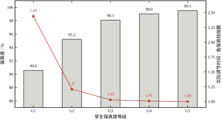
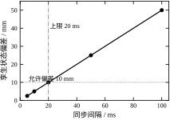
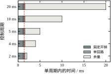
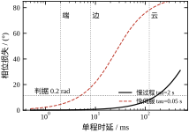
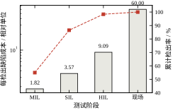
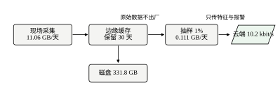
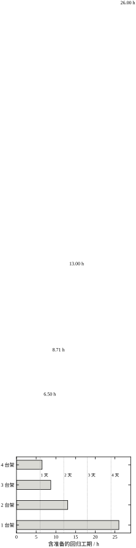
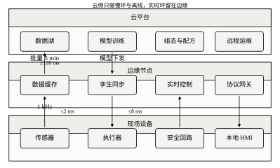
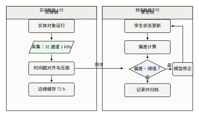
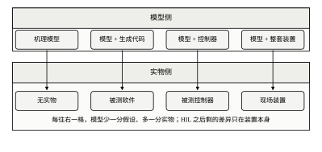

数字孪生与边缘计算常被当成两个话题，实际是同一件事的两面：把计算放到离设备足够近的地方，并让模型与设备保持同步。本章把这两面合成一条主线——让模型和实物处在同一个时间尺度上。
第一个场景，孪生只用来做展示。大屏上的三维模型转得很流畅，温度、压力、产量都在动，但它和真实设备之间差了三十秒，也没有人用它算过任何东西。这种孪生的作用是汇报，不是控制。
第二个场景，边缘盒子成了新瓶颈。项目为了“上边缘”，把原来跑在工控机上的十几个回路搬到一台低功耗盒子里，周期从 10 ms 压到 2 ms。上线后偶发超时，一查是固定开销 1.2 ms 加每回路 0.35 ms，在 2 ms 周期下连一个回路都放不下。
第三个场景，云控制调不动。团队把控制器放到云上，单程时延 120 ms。对一个时间常数 2 s 的慢过程，相位损失 8.19°，勉强能用；换到时间常数 0.05 s 的伺服，相位损失 78.23°，闭环直接振荡。结论不是“云不行”，而是“云只能管慢环”。
三个场景对应三个问题：保真度不够、实时预算没算、分层没划。本章按这三个问题展开。
数字孪生、仿真模型、软测量、监控看板，四个词经常被混用，含义差得很远。
仿真模型是离线的，输入是人给的工况，输出是预测，跑完就结束。它不要求与实物同步。
软测量是在线的，用可测变量推不可测变量，比如用温度与流量推成分。它只输出一个或几个量，不维护完整状态。
监控看板是在线的，但它只做展示与报警，不参与计算，也不回写。
数字孪生是四者里要求最高的：在线、维护完整状态、与实物同步、能反过来影响决策。判断一个东西是不是孪生，看它有没有“同步”这一环就够了。没有同步，它只是仿真或看板。
第 86 到 88 章讲控制怎么算、怎么离散、怎么在 PLC 里实现。第 89 章讲通信与网络。第 90 章讲软件工程。本章讲这些代码与模型跑在哪里、和实物怎么对齐。
具体分工：采样周期、扫描周期、时延的计算沿用第 88 章的结论，本章不重复推导；网络时延的测量方法沿用第 89 章；版本管理与在环测试的流程沿用第 90 章。
本章新增三样东西：保真度的量化、边缘节点的实时预算、云边端的分层判据。这三样是前面几章没有的。
第 92 章转向信息安全，第 93 章转向项目交付。本章的分层架构会被那两章引用，所以图 91-1 的边界要一次画准。
保真度是孪生与实物的接近程度。本章用阶跃响应的最大相对偏差衡量，五级从 90.55% 到 99.52%。
同步是让孪生的状态跟上实物。同步间隔决定状态偏差，0.5 m/s 的变化率下，20 ms 对应 10 mm。
时延是数据从产生到影响决策的时间。它不是一个数，而是一条链，端侧 2 ms、边缘 8 ms、云侧 120 ms 是三档典型值。
分层是把不同时间尺度的任务放到不同位置。判据是相位损失不超过 0.2 rad，慢过程允许 166.7 ms，快伺服只允许 5.00 ms。
在环是让真实部件参与测试。MIL、SIL、HIL 三级的检出率分别是 55%、70%、88%，单位成本是 1、2.5、8。
五个词里最容易误解的是保真度。它不等于“模型准不准”，而等于“模型在关心的工况上差多少”。一个全局误差 5% 的模型，在某个工作点附近可能只差 0.5%。
本章所有内容围绕一句话：让模型和实物处在同一个时间尺度上。
孪生的保真度决定“模型说的对不对”，同步决定“模型说的是不是此刻”，边缘的实时预算决定“模型来不来得及算”，分层决定“该在哪一层算”。
四件事里任何一件不成立，孪生就只能停在展示层。保真度不够，预测没有意义；不同步，预测的是过去；来不及算，输出总是迟到；分层错了，迟到的量级会大到无法补偿。
反过来，四件事都成立时，孪生能做三件实事：在虚拟环境里试参数、在故障前给出预警、在交付前替代部分现场调试。
本章涉及三个时间尺度，混用会得出荒谬的结论。
第一把是毫秒级：控制周期、边缘节点的计算预算、端到端的抖动。这一层的判据是“最坏情况能不能在周期内完成”。
第二把是秒级：同步间隔、网络批量、HIL 的单条用例时长。这一层的判据是“状态偏差是否可接受”。
第三把是天级：参数漂移、数据保留、模型再训练。这一层的判据是“偏差累积到阈值要多久”。
三把尺子对应三组参数：周期与占用率、同步间隔与偏差、漂移速率与检测延迟。调参时不能跨尺度类比，把毫秒级的余量拿去补天级的漂移，是没有意义的。
本章不推导控制算法。PID 见第 44 章与第 106 章，MPC 见第 58 章与第 80 章，Smith 预估见第 47 章与第 107 章。本章只讨论这些算法跑在哪里、需要多少时间、数据从哪来。
本章不讨论三维建模与可视化。孪生的价值在计算与比对，不在渲染。一个大屏做得很漂亮但不同步的孪生，不如一张准确的趋势图。
本章不讨论云平台的选型与运维。云侧的容量规划、容器编排、计费模型属于 IT 范畴，本章只在“该不该上云”这一层给判据。
本章也不讨论信息安全的细节。边缘节点暴露在车间网络里，安全风险真实存在，但那是第 92 章的内容。
本章公式不少，但真正需要在会上说出口的只有三个数字。
第一个是 2.44 倍。它来自表 91-1：用 G1 孪生整定出来的参数放到实物上，调节时间是高保真档的 2.44 倍。这个数字回答“孪生不准会怎样”，比“保真度 90.55%”更让人有感觉。
第二个是 0 个回路。它来自表 91-3：2 ms 周期下，固定开销 1.2 ms 加单回路 0.35 ms 已经占掉 77.5%，超过 70% 的上限，一个回路也放不下。这个数字回答“边缘盒子为什么跑不动”。
第三个是 78.23°。它来自表 91-4：云侧 120 ms 时延对 40 rad/s 的快伺服造成 78.23° 的相位损失，闭环不可能稳。这个数字回答“为什么快伺服不能上云”。
三个数字对应三类争论：保真度值不值得投入、边缘盒子够不够用、云控制能不能落地。记住它们，比背十条定义有用。
三个数字还有一层共同的读法：它们都是“差距”，不是“绝对值”。2.44 倍是两级孪生的差距，0 与 36 是两种周期的差距，78.23° 与 0.14° 是两类对象的差距。工程判断几乎总是从差距出发的。
第一次读，按 §91.1、§91.2、§91.3 的顺序走，先把“衡量什么、怎么算、怎么定”这条线拉通。
§91.4 到 §91.6 留给已经动手的人。连续与离散的区别、稳定性与性能的验收，都是调试阶段才会真正关心的内容。
第二次读，直接翻 §91.7 到 §91.9。这三节是参数手册，遇到具体问题按标题查，不必从头看。
第三次读，看 §91.10 与 §91.11。前者讲怎么落地，后者讲什么时候不该做。两节都偏判断，没有唯一答案，适合在方案评审前看。
§91.12 是代码说明，不必通读。跑一遍脚本，对着九段报告回看正文，比读十页说明快。
把三个数字放进一段真实对话里，能看出它们的用法。
供应商说，他们的边缘盒子算力是上一代的三倍，可以跑二十个回路。回答只需要一句：周期是多少。如果对方说 2 ms，那么式 91-6 给出的回路数是 0，算力再高三倍也不改变固定开销占满周期这件事。
集成商说，可以把控制器放到云上，云端有弹性算力。回答也只需要一句：对象的闭环带宽是多少。慢过程 1.2 rad/s 配 120 ms 是 8.19°，能用；快伺服 40 rad/s 是 78.23°，不能用。弹性算力与时延无关。
项目经理说，孪生已经做到 95% 的准确度，够用了。回答要问一句：用它整定出来的参数，在实物上劣化多少。95.22% 对应 1.21 倍，也就是劣化 20.8%，刚好压在 20% 的线外。
三段对话的共同点是：不问“好不好”，只问“数是多少”。数一出来，争论就结束了。
这也是本章反复用表格与公式的原因。定性判断容易各说各话，定量判断只有一个答案。
本章十张图不是装饰，每张对应一个可以在评审会上被问到的问题。
图 91-1 回答“放在哪”，三层的边界与典型时延一次画清。图 91-2 回答“怎么对齐”，实体侧与孪生侧的数据流与修正回环都在里面。
图 91-3 回答“模型准不准”，保真度与实物劣化画在一起。图 91-4 回答“此刻差多少”，同步间隔与偏差是一条直线。
图 91-5 回答“算不算得动”，五个周期的预算堆叠成条。图 91-6 回答“来不来得及”，两条相位曲线跨在对数横轴上。
图 91-7 回答“在哪一级拦缺陷”，检出率与成本双轴并列。图 91-8 回答“要排多久”，台架数与工期画到第四个点。
图 91-9 回答“数据怎么走”，从采集到上云的四段链路。图 91-10 回答“谁在哪一级交付”，模型侧与实物侧两条泳道把 MIL、SIL、HIL、现场四格摊开，每格写明这一步少了哪一分假设。
十个问题对应十个设计动作。翻到某张图答不出它的问题，说明这一部分还没设计完。
保真度必须是一个可测的数，否则无法验收。本章用阶跃响应的最大相对偏差定义：
F = 1-\frac{\max_t\left|y_m(t)-y_p(t)\right|}{y_p(\infty)} \tag{91-1}
其中 y_m 是孪生输出，y_p 是实物输出，分母取实物的稳态值。取最大值而不是平均值，是因为控制最怕最坏情况。
这个定义有三个限定。第一，只在关心的工况上算，不覆盖全工况；第二，输入取阶跃，因为阶跃最能暴露动态差异；第三，分母用稳态值，使不同量纲的对象可以横向比较。
按这个定义，本章五级孪生的保真度从 90.55% 到 99.52%，对应最大偏差 9.45% 到 0.48%。这五级的参数偏差与结果见表 91-1。
表 91-1 五级孪生的参数偏差、保真度与整定后果
| 等级 | 增益偏差 | 时间常数偏差 | 滞后偏差 | 最大偏差 | 保真度 | 实际调节时间 |
|---|---|---|---|---|---|---|
| G1 粗略 | 10% | 20% | 30% | 9.45% | 90.55% | 2.62 s |
| G2 可用 | 5% | 10% | 15% | 4.78% | 95.22% | 1.30 s |
| G3 良好 | 2% | 5% | 5% | 1.90% | 98.10% | 1.11 s |
| G4 精确 | 1% | 2% | 2% | 0.96% | 99.04% | 1.09 s |
| G5 高保真 | 0.5% | 1% | 1% | 0.48% | 99.52% | 1.08 s |
表里最后一列最值得看。它回答的是“保真度不够会怎样”：用孪生整定出来的控制器，放到实物上跑，调节时间从 1.08 s 一路劣化到 2.62 s。
小偏差下，输出误差与参数误差近似线性：
\frac{\Delta y}{y}\approx \sum_i S_i\frac{\Delta p_i}{p_i} \tag{91-2}
S_i 是敏感度。对一阶惯性加滞后对象，增益的敏感度是 1，时间常数的敏感度在响应初期接近 0、在过渡段接近 1，滞后的敏感度与 L/\tau 同阶。
这个式子解释了表 91-1 里的非线性。G1 的三项偏差是 10%、20%、30%，如果简单相加会得到 60% 的误差，实际只有 9.45%。原因是三项偏差在时间上错开：增益偏差影响稳态，时间常数偏差影响过渡段，滞后偏差影响起始段，最大值不会同时取到。
敏感度分析的用处是排优先级。同样花一周时间，把增益标定准比把滞后测准更划算，因为增益敏感度恒为 1，而滞后只在大 L/\tau 时敏感。
保真度本身不是目的，目的是“用孪生做的决定在实物上成立”。表 91-1 的最后一列就是后果：同样的整定规则，落在不同保真度的孪生上，实物的调节时间差 2.44 倍。
这个后果的机制是整定偏保守。孪生把滞后估大了 30%，IMC 规则给出的增益就小 23%，实物上的闭环自然变慢。反过来，孪生把滞后估小了，增益就会偏大，实物上出现超调甚至振荡。
所以保真度的验收标准不该是“误差小于 5%”，而该是“用这个孪生整定出来的参数，在实物上的性能劣化不超过 20%”。按表 91-1，这个标准对应 G2 级以上。

图 91-3 把两列画在一起，柱是保真度，线是调节时间倍数。两条曲线的拐点都在 G2 与 G3 之间，说明再往上提保真度，收益迅速变小。
孪生的状态滞后于实物，滞后量由变化率与同步间隔决定：
e_{\rm sync}=v\,h \tag{91-3}
v 是状态变化率，h 是同步间隔。这个式子是线性的，没有饱和，也没有延迟，但它在多数场合够用，因为同步间隔通常远小于对象时间常数。
反过来解，给定允许偏差可以定同步间隔上限：
h\le \frac{e_{\rm allow}}{v} \tag{91-4}
按 0.5 m/s 的变化率、10 mm 的允许偏差，上限是 20 ms。表 91-2 给了五个间隔对应的偏差，图 91-4 把这条直线与允许带画在一起。
表 91-2 同步间隔与孪生状态偏差（变化率 0.5 m/s）
| 同步间隔 | 5 ms | 10 ms | 20 ms | 50 ms | 100 ms |
|---|---|---|---|---|---|
| 状态偏差 | 2.50 mm | 5.00 mm | 10.00 mm | 25.00 mm | 50.00 mm |

表 91-2 的用法是反查。现场说“位置偏差不能超过 10 mm”，就直接得到 20 ms 的同步间隔，不必再讨论“同步要不要更快”。
边缘节点的每个周期要干固定的活，再加上每个回路的活：
U=\frac{c_0+n\,c_1}{T} \tag{91-5}
c_0 是固定开销，包括操作系统节拍、通信栈、看门狗；c_1 是单回路的计算开销；n 是回路数；T 是周期。占用率不超过上限 U_{\max} 时，可支持的回路数是：
n_{\max}=\left\lfloor\frac{U_{\max}T-c_0}{c_1}\right\rfloor \tag{91-6}
按 c_0=1.2 ms、c_1=0.35 ms、U_{\max}=70\%，五个周期的结果见表 91-3。
表 91-3 边缘节点在不同周期下可支持的回路数
| 周期 | 2 ms | 4 ms | 5 ms | 10 ms | 20 ms |
|---|---|---|---|---|---|
| 单回路占用 | 77.5% | 38.7% | 31.0% | 15.5% | 7.7% |
| 可支持回路数 | 0 | 4 | 6 | 16 | 36 |

图 91-5 把五个周期画成横向堆叠条，固定开销与回路开销占掉的份额一目了然，余量随周期缩短迅速被啃掉。
表 91-3 的第一列是个警告：2 ms 周期下连一个回路都放不下，因为固定开销 1.2 ms 加单回路 0.35 ms 已经是 1.55 ms，占 77.5%，超过 70% 的上限。
这张表也解释了为什么“边缘盒子跑十几个回路”往往失败。十几个回路需要 10 ms 以上的周期，而项目为了“实时”把周期设成 2 ms，两个要求互相矛盾。
时延对闭环的影响可以统一折算成相位损失：
\varphi=\arctan\left(\omega_c T_d\right) \tag{91-7}
\omega_c 是闭环带宽，T_d 是总时延。判据取相位损失不超过 0.2 rad，即 11.5°：
\omega_c T_d\le 0.2 \tag{91-8}
按这个判据，慢过程（\omega_c=1.2 rad/s）允许 166.7 ms，快伺服（\omega_c=40 rad/s）只允许 5.00 ms。表 91-4 给了三层的实际值。
表 91-4 云边端三层的时延与相位损失
| 层 | 时延 | 慢过程损失 | 快伺服损失 |
|---|---|---|---|
| 端侧闭环 | 2 ms | 0.14° | 4.57° |
| 边缘闭环 | 8 ms | 0.55° | 17.74° |
| 云侧闭环 | 120 ms | 8.19° | 78.23° |
表 91-4 的读法是横向比。同一层对两个对象的损失差几十倍，说明“能不能上云”不是架构问题，是对象速度问题。

图 91-6 把两条曲线画在对数横轴上，两条竖直虚线标出 8 ms 与 120 ms。快伺服的曲线在 8 ms 处已经越过判据线，这是“边缘也救不了快伺服”的定量依据。
MIL、SIL、HIL 三级测试各有检出率，串联之后的累计检出率是：
P=1-\prod_i\left(1-p_i\right) \tag{91-9}
每检出缺陷的成本按下式折算：
C=\frac{\sum_i c_i}{P} \tag{91-10}
按 p=(0.55,0.70,0.88)、c=(1,2.5,8)，三级串联的累计检出率是 98.4%，总成本 11.5，折合每检出缺陷 11.69。表 91-5 给了逐级数据。
表 91-5 三级在环测试与现场暴露的检出率与成本
| 阶段 | 检出率 | 单位成本 | 每检出缺陷成本 | 累计检出率 |
|---|---|---|---|---|
| MIL | 55.0% | 1.0 | 1.82 | 55.0% |
| SIL | 70.0% | 2.5 | 3.57 | 86.5% |
| HIL | 88.0% | 8.0 | 9.09 | 98.4% |
| 现场暴露 | 100% | 60.0 | 60.00 | 100% |

表 91-5 的关键对比是最后一行。现场暴露每检出缺陷的成本是 60，是 MIL 的 33 倍。这就是“能早测就早测”的定量依据。
图 91-7 把检出率与每缺陷成本放在同一张双轴图上，横轴是四个阶段。成本柱用对数纵轴，否则 MIL 的 1.82 会被现场暴露的 60 压成一条看不见的线。
但也不能只看成本。MIL 检出率只有 55%，剩下 45% 它根本测不到，因为模型里没有真实的时序、驱动与硬件行为。三级串联的意义在于补齐，不在于替代。
数据量是一阶乘法：
Q=N\,f_s\,b\times 86400 \tag{91-11}
N 是通道数，f_s 是采样率，b 是每样本字节数。按 32 通道、1 kHz、4 B 计算，日数据量是 11.06 GB。
这个数决定三件事。第一，边缘节点要多大磁盘：保留 30 天需要 331.8 GB。第二，上云带宽：按 1% 抽样，每天 0.111 GB，折合 10.24 kbit/s。第三，断网缓存要多久：72 h 约 33 GB。
三个数放在一起看，结论很清楚：原始数据不出厂，边缘只存近期，云端只收特征与报警。这就是图 91-9 那条链。

参数漂移是缓慢的，检测延迟由漂移速率与阈值决定：
t_d=\frac{\theta_{\rm th}-\theta_0}{r} \tag{91-12}
按阈值 5%、漂移速率 0.5 到 4 %/月，检测延迟从 10 个月缩短到 1.25 个月。表 91-6 给了四个速率。
表 91-6 漂移速率与检测延迟（阈值 5%）
| 漂移速率 | 0.5%/月 | 1%/月 | 2%/月 | 4%/月 |
|---|---|---|---|---|
| 到阈值时间 | 10.0 月 | 5.0 月 | 2.5 月 | 1.25 月 |
| 三个月累计 | 1.5% | 3.0% | 6.0% | 12.0% |
表 91-6 有个隐含结论：阈值定得越低，发现越早，但误报越多。5% 是一个折中，它对 2%/月的漂移能在 2.5 个月内报警，同时不会被测量噪声频繁触发。
三个月累计那一行是给季度体检用的。如果每个季度量一次，2%/月的漂移在第一次体检时就会超过 5%，4%/月的会到 12%，都跑不掉。
HIL 的工期是轮数与单例时长的乘积，再乘准备系数：
T_{\rm HIL}=\left\lceil\frac{N}{n_b}\right\rceil t_{\rm case}\left(1+\eta\right) \tag{91-13}
N 是用例数，n_b 是台架数，t_{\rm case} 是单例时长，\eta 是准备系数。按 400 例、3 min、\eta=0.30，单台架 26.00 h，两台 13.00 h，三台 8.71 h。
换算成工作日更有意义。按每天有效 6 h，单台架 5 天，两台 3 天，三台 2 天。表 91-7 与图 91-8 用的是这个口径。
表 91-7 台架数与 HIL 回归工期
| 台架数 | 每批用例 | 批次余量 | 工期 | 工作日 |
|---|---|---|---|---|
| 1 | 400 | 0.0% | 26.00 h | 5 天 |
| 2 | 200 | 0.0% | 13.00 h | 3 天 |
| 3 | 134 | 0.5% | 8.71 h | 2 天 |
| 4 | 100 | 0.0% | 6.50 h | 2 天 |

表 91-7 到第三台架之后收益就平了：3 台 2 天，4 台还是 2 天。原因是整数效应，工期按天取整，多出来的台架只减少了几个小时，不足以跨过一个工作日。
这条结论对资源申请很有用：申请到第三台就该停，第四台的边际价值接近零，不如把钱花在缩短单例时长上。
前面十个小节各算一种误差，现场评审时却总要回答一个问题：这些误差加起来够不够用。
合起来算不能直接相加，因为三笔误差的单位不同。模型误差是一个百分比，同步误差是一个长度，时延误差是一个角度。单位不同的量相加，得到的东西没有物理意义。
正确的做法是把三笔误差都折算成同一个量——闭环性能的劣化比例。模型误差按表 91-1 的最后一列折算，同步误差按“偏差占允许行程的比例”折算，时延误差按“相位损失占相位裕度的比例”折算。
折算之后再相加，并且按最坏情况相加，不按均方根。控制怕的是最坏情况同时出现，均方根会低估这种巧合的概率。
预算分配建议是模型占四分之一、同步占四分之一、时延占二分之一。时延占一半，是因为它最难补偿；模型误差可以靠反馈部分兜住，同步误差可以靠插值部分兜住，时延只能靠缩短链路。
留 30% 不分配。这部分不是浪费，是给现场工况变化留的余量。把预算分到 100% 的方案，投运后遇到第一个夏天就会超。
工程讨论里最常见的错误，是拿一个指标去补另一个指标。
时延不能用保真度补。模型再准，信息迟到就是迟到，控制器拿到的是过时的状态，算得再对也没用。式 91-7 里时延单独出现在反正切里，与模型误差没有替换关系。
保真度不能用同步补。同步解决的是“此刻状态是多少”，保真度解决的是“给定状态会怎么演化”，两者一个管现在、一个管未来。同步做到 1 ms，模型差 10%，预测照样偏。
算力不能用分层补。把云侧的算力堆到极限，也消不掉 120 ms 的往返时延，因为瓶颈在物理距离与协议栈，不在 CPU。表 91-4 的 78.23° 是链路决定的，换更快的服务器不会变。
三条合起来是一句话：每个指标守自己的门，不能互换。评审时听到“我们模型很准，所以时延大一点没关系”，就该打断。
把三笔误差放在一个具体对象上，算法就清楚了。
设位置环的闭环带宽 40 rad/s，允许位置偏差 10 mm，边缘节点闭环时延 8 ms，孪生等级 G3。
第一笔，同步。按 0.5 m/s 的变化率、20 ms 的同步间隔，偏差 10 mm，正好用满允许值，没有余量。
第二笔，时延。8 ms 对 40 rad/s 的相位损失是 17.74°，判据是 11.5°，已经越线。这一笔过不去。
第三笔，保真度。G3 对应的实物劣化是 2.8%，在 20% 的线内，余量充足。
三笔账摆在一起，结论很明确：要动的是时延，不是模型。把闭环从边缘挪到端侧，时延从 8 ms 降到 2 ms，相位损失从 17.74° 降到 4.57°，这一笔立刻过关。
挪完之后再看同步。端侧采样率更高，同步间隔可以从 20 ms 收到 10 ms，偏差从 10 mm 降到 5 mm，余量也出来了。
这个算例说明误差预算的用处：它不告诉你“系统好不好”，它告诉你“下一步该改哪里”。
两个概念经常被混为一谈，实际差得很远。
采样是“多久测一次”，由传感器与采集卡决定，通常是 1 ms 或更快。同步是“多久把测到的状态送进孪生一次”，由通信与计算决定，通常是 10 ms 到 1 s。
采样率高不代表同步快。采集卡 1 kHz，孪生却每 500 ms 才拿一次数据，同步误差仍按 500 ms 算，与采样率无关。
反过来，同步快也补不回采样慢。同步间隔 5 ms 而采样间隔 100 ms，孪生拿到的仍是每 100 ms 才更新一次的状态，中间靠插值填补，插值补不出真实的高频变化。
正确的说法是：同步误差由同步间隔决定，采样率只决定插值的精度。两者是串联关系，不是替代关系。
配系统时先定采样率，再定同步间隔，最后检查同步间隔是否大于采样间隔的整数倍。顺序乱了，会出现“采样 1 kHz、同步 5 ms”这种看起来很快、实际插值三次的配置。
保真度可以用三种口径验收，选哪种决定了后面怎么测。
第一种是时域最大偏差，即式 91-1。它直观、好算、能画成曲线，适合工程验收。缺点是只看最坏点，不看整体形状。
第二种是频域幅值误差，比较孪生与实物在关心频段内的幅频特性。它适合判断“在某些频率上会不会共振”，不适合向非专业人士解释。
第三种是闭环性能劣化，即用孪生整定、在实物上跑，比较调节时间或超调。它最贴近用途，但需要实物试验，成本最高。
本章主用第一种，用第三种做验收。理由很实际：第一种可以离线算，第三种必须上实物，两者结合既省事又不失真。
三种口径不能混着报。报“保真度 98%”时要说清是哪种，否则两个团队各报一个数，争论半天发现口径不同。
做一套能用的孪生加边缘系统，按五步走，每步有一个明确输出。
第一步，划边界。输出一张分层职责表，写清哪些功能放在端、边、云，以及跨层的接口。
第二步，定点表。输出数据点表，每个点写清名称、量程、采样率、精度、是否入孪生。
第三步，定同步。输出同步方案，写清同步间隔、时间戳来源、断链时的处理。
第四步，算预算。输出边缘节点的周期与占用率表，以及最坏执行时间的估算。
第五步，排测试。输出在环测试计划，写清 MIL、SIL、HIL 各测什么、各用多少用例、几天完成。
五步的顺序不能颠倒。先定点表再划边界，会漏掉跨层需要的点；先算预算再定同步，会把同步开销算漏。
孪生不必覆盖全部设备。划边界的依据是“这个量的预测会不会被用来做决定”。
会用来做决定的，进孪生：关键温度、压力、位置、以及它们的导数。不会用来做决定的，不进：辅助风机的电流、柜内温度、照明状态。前者决定控制的正确性，后者只影响维护。
边界还有一层是时间。孪生要维护的是“当前状态 + 一段历史”，不是“全部历史”。历史长度按最长的一次比对窗口取，通常几小时到几天。
第三层是精度。同一个设备，用于整定的孪生要 G3 以上，用于报警的 G2 就够，用于展示的 G1 也行。不同用途用不同精度的孪生，比统一提高精度省钱得多。
划完边界要写一句话总结：这套孪生回答哪三个问题。答不出来，说明边界划得太宽，或者根本没想清楚用途。
分工的核心判据是时间尺度。表 91-8 给了一张可直接抄的职责表。
表 91-8 云边端三层的职责划分
| 层 | 时间尺度 | 该做的事 | 不该做的事 |
|---|---|---|---|
| 端 | 微秒到毫秒 | 采样、滤波、安全联锁、限幅 | 复杂优化、历史存储 |
| 边 | 毫秒到秒 | 实时控制、孪生同步、数据缓存、协议转换 | 长期存储、模型训练 |
| 云 | 秒到天 | 模型训练、批量分析、远程运维、报表 | 任何实时闭环 |

表 91-8 的第三列与第四列要一起看。“不该做的事”往往是项目里最容易越界的地方：把优化算法放到端侧，把实时闭环放到云侧，都是常见错误。
越界的后果不是“稍微慢一点”，而是“整个设计失效”。端侧算力被优化算法吃掉，采样抖动上升；云侧闭环一旦断网，设备失去控制。
数据点表是后面所有工作的基础。每个点至少要写六项：名称、单位、量程、采样率、精度、去向。
采样率按对象定，不按“越高越好”定。温度 1 Hz 足够，位置 100 Hz 到 1 kHz，振动可能要到 10 kHz。采样率定高了，数据量与边缘负载都跟着涨。
精度要区分分辨率与准确度。分辨率是末位代表多少，准确度是整体偏差。孪生关心准确度，看板关心分辨率。
去向分三类：只进控制、进孪生、只进历史。三类点的存储策略不同，控制点要保证实时，孪生点要保证同步，历史点可以降采样。
点表定完要做一次总量核算。32 个点 1 kHz 是 11.06 GB/天，128 个点 1 kHz 就是 44.2 GB/天，边缘磁盘立刻不够。这时要么降采样，要么只存特征。
同步要解决三件事：时间戳从哪来、数据怎么对齐、断了怎么办。
时间戳统一由边缘节点打，不用端侧时钟。端侧时钟精度差，长时间运行会漂。边缘节点接一次 GPS 或 PTP，全厂一个时间基准。
对齐按“最近邻 + 插值”两级。同步间隔大于采样间隔时用最近邻，小于时用线性插值。插值会引入平滑，对高频分量不利，所以只在必要时用。
断链处理分三档。断 1 s 以内，孪生保持上一状态并标记“陈旧”；断 1 min 以内，用缓存补；超过 1 min，孪生进入“失同步”状态，输出只用于展示，不参与决策。

图 91-2 的右侧有一条回环：偏差超过阈值时修正模型。这条回环要限速，每次修正不超过参数的 1%，否则一次误判会把模型带偏。
选型看四个数：周期、回路数、接口、环境。
周期与回路数用式 91-6 算。先定回路数，再反解需要多短的周期，最后看候选节点能不能在该周期下把占用率压到 70% 以下。
接口要按现场总线定。Profinet、EtherCAT、Modbus 对实时性的要求差一个数量级，节点支持的协议直接决定了能不能用。
环境常被忽略。车间温度 45 ℃、粉尘、振动，消费级盒子撑不过一个夏天。工业级节点的价格是消费级的三到五倍，但这笔钱不能省。
还要看一个软指标：能不能离线升级。边缘节点数量多、位置散，每次升级都跑现场是不现实的。支持远程升级且有回滚的节点，运维成本低一个数量级。
在环测试不是“越全越好”，而是“分层补漏”。表 91-9 给一个 400 例的分配方案。
表 91-9 三级在环测试的用例分配
| 阶段 | 用例数 | 单例时长 | 台架 | 工期 | 主要目标 |
|---|---|---|---|---|---|
| MIL | 400 | 0.3 min | 不限 | 2.0 h | 算法逻辑、边界条件 |
| SIL | 240 | 1.0 min | 不限 | 4.0 h | 代码实现、接口匹配 |
| HIL | 400 | 3.0 min | 3 | 8.71 h | 时序、驱动、故障注入 |
表 91-9 的用例数不是随意定的。MIL 覆盖全部算法用例，因为它最便宜；SIL 只测与实现相关的 240 例，因为纯算法部分 MIL 已经覆盖；HIL 回到 400 例，因为时序与驱动的缺陷与算法用例一一对应，跳不得。
HIL 的 8.71 h 是含准备的时间。准备包括上电、刷写、标定、清场，这部分常被漏算，实际会占三成。
排计划时把 HIL 放在最后，但不要放在交付前一周。HIL 发现问题往往要改驱动或改时序，改动会影响 MIL 与 SIL 的结论，需要回过头重跑。
设计阶段结束要填一张基线表，把关键参数一次定死。表 91-10 是模板。
表 91-10 一页纸设计基线
| 项 | 取值 | 依据 |
|---|---|---|
| 孪生等级 | G3 | 整定用途，要求劣化 ≤20% |
| 保真度 | ≥98.1% | 表 91-1 |
| 同步间隔 | 20 ms | 允许偏差 10 mm、变化率 0.5 m/s |
| 边缘周期 | 10 ms | 16 个回路，占用 15.5% |
| 边缘占用上限 | 70% | 留 30% 给抖动与突发 |
| 数据保留 | 30 天 | 331.8 GB 磁盘 |
| 上云比例 | 1% | 10.24 kbit/s |
| 漂移阈值 | 5% | 2.5 个月可发现 2%/月 的漂移 |
| HIL 用例 | 400 例 / 3 台架 | 2 个工作日 |
这张表的作用是让后续的变更有一个对照。任何一项要改，都要说明为什么，以及改了以后哪几项跟着变。
基线不是越严越好。把保真度定到 G5，同步定到 5 ms，边缘占用定到 40%，项目会被自己的指标压死，最后所有指标都被悄悄放宽。
第一步划边界，最常见的错误是“能采到的点都进孪生”。点进得越多，同步开销、模型复杂度、存储量一起涨，而多数点并不参与任何决定。
第二步定点表，最常见的错误是只写测量点，不写去向。没有去向，后面定存储策略时只能全按最高标准存，磁盘很快写满。
第三步定同步，最常见的错误是顺序反了：先拍一个 20 ms，再去问允许偏差是多少。正确的顺序永远是先有允许偏差，再反解间隔。
第四步算预算，最常见的错误是拿平均执行时间当最坏执行时间。平均值好看，P99 才决定会不会超时。
第五步排测试，最常见的错误是用例数平均分给三级。缺陷类型分布不均，平均分的结果是该测的没测够，不该测的重复测。
五个错误有一个共同点：都是“先做再想”。每一步只要先写一句判据，错误就少一半。
判据的写法有统一格式：量、阈值、测量方法。比如“占用率不超过 70%，按最坏执行时间算，用 GPIO 打点测一万个周期”。三项齐了，才叫判据。
评审会上不需要逐页讲方案，问六个问题就够。
第一，这套孪生回答哪三个问题。答不出来，说明边界没划清。
第二，每个数据点的去向写清楚了吗。控制、孪生、历史三类必须能一一对上。
第三，同步间隔是从允许偏差反解出来的，还是拍出来的。前者能追溯，后者迟早要返工。
第四，占用率是按最坏执行时间算的，还是按平均值算的。这一条决定了现场会不会偶发超时。
第五，HIL 的用例数与历史缺陷分布匹配吗。老项目改驱动，HIL 就该多；新项目改算法，MIL 就该多。
第六，这套系统最先失效的是哪个指标，怎么发现。答不出，说明运维方案还没做。
六个问题里，第三与第四个最容易被含糊过去。含糊的答案通常是“差不多”“经验值”，而这两项恰恰是可以精确算的。
表 91-10 有十行，填的时候从左到右、从上到下，每一行的“依据”列必须写出表号或公式号。
第一行定等级，先想用途。整定用途就填 G3，展示用途就填 G1，不要一上来填 G5。
第二行保真度由等级查表得到，不独立填写。填了等级又填一个不相符的保真度，说明有人没查表。
第三行同步间隔由允许偏差反解，第四行边缘周期由回路数与式 91-6 反解。这两行是整张表里唯一需要算的。
第五行到第八行是资源与运维参数，按磁盘、带宽、检修周期直接填。
第九行 HIL 用例与台架数，按表 91-7 查，注意整数效应。
填完做一次交叉检查：边缘周期是否能容纳计划的回路数、同步间隔是否小于控制周期的整数倍、HIL 工期是否在交付日之前留出两周。
三项都过，这张表才可以拿去评审。
设计文档不在厚，在于接手的人能不能照着做。本章建议三张图加两张表。
第一张图是分层架构，即图 91-1 的那种画法。要标清每一层的边界、每个节点的位置与地址，以及跨层的接口。
第二张图是数据流，从传感器到孪生、到云，每一段标出协议、周期、数据量。数据流图画不清，后面算带宽与缓存全是猜。
第三张图是同步时序，标出采样时刻、同步时刻、计算时刻三者的相位关系。时序图画不出来，说明同步方案还没想清楚。
第一张表是数据点表，第二张表是基线表（表 91-10）。两张表都要有版本号与日期，改动留痕。
三张图两张表之外，不要写大段文字。文字用来解释“为什么这么定”，不重复图表里已有的信息。
文档的验收标准是：一个没参加设计的人，拿着这五样东西，能独立完成一次同步间隔的修改并验证。
本章的连续模型建立在三条假设上，用之前要确认它们成立。
第一条，对象可以用低阶模型描述。一阶惯性加滞后能覆盖多数温度、流量、液位回路；伺服与多容对象要更高阶，本章的结论只能作趋势参考。
第二条，偏差是小的。式 91-2 的线性化只在偏差 10% 以内成立，偏差更大时要直接仿真。
第三条，时延是纯滞后。实际时延有分布，抖动的存在会让等效滞后大于平均值，本章按平均值算，结论偏乐观。
三条假设在多数工业过程里成立，在快伺服与多变量强耦合对象上要谨慎。
保真度不是“合格/不合格”，而是一条连续曲线。表 91-1 的五个点只是采样，实际可以取任意值。
连续性的用处是算边际收益。从 G2 到 G3，保真度提高 2.88 个百分点，调节时间从 1.30 s 降到 1.11 s，改善 14.6%。从 G3 到 G4，保真度提高 0.94 个百分点，调节时间只降 0.02 s，改善 1.8%。
边际收益递减得非常快。这就是为什么“把模型做得更准”在某个点之后不再划算，也是为什么多数项目停在 G3。
判断该停在哪一点，用“性能劣化不超过 20%”这条线。按表 91-1，G2 的劣化是 20.8%，刚好压线；G3 是 2.8%，有充足余量。
式 91-3 是线性的，可以直接外推。变化率 0.5 m/s 时，同步间隔从 5 ms 增到 100 ms，偏差从 2.50 mm 增到 50.00 mm，严格成比例。
实际系统里变化率不是常数。位置在换向点附近速度接近零，在匀速段达到最大。同步误差应该按最大变化率算，而不是平均变化率。
如果状态是旋转或往复运动，变化率本身是正弦，同步误差也是正弦，两者相位差 90°。这时最大误差出现在速度最大处，而不是位置最大处。
连续估算的另一个用处是定缓存深度。同步间隔 20 ms、断网 1 min，需要缓存 3000 帧；每帧 32 通道 4 B，约 384 kB。这个数决定了边缘节点的环形缓冲区大小。
式 91-7 的反正切是连续函数，在小角度下近似线性：\varphi\approx\omega_c T_d。判据 \omega_c T_d\le0.2 就是这条近似线的截断点。
线性的好处是时延可以相加。端侧 2 ms 加边缘 8 ms 加网络 2 ms，总时延 12 ms，相位损失直接是各部分之和。这就是为什么分层设计时可以把预算拆开分给各层。
但相加只在小角度成立。云侧 120 ms 对快伺服的损失是 78.23°，这时线性近似会给出 \omega_c T_d=4.8 rad，远超实际，说明近似失效，必须用反正切。
工程上的做法是：总时延小于对象时间常数的 20% 时用线性，超过时用反正切。这条分界与 0.2 rad 的判据是同一个来源。
式 91-11 是纯乘法，连续可调。三个因子任何一个变化，数据量等比变化。
实际数据量会比估算高 10% 到 30%，因为要加包头、时间戳、校验。按 11.06 GB/天 估算的系统，实际写入可能到 13 GB/天。定磁盘时要按实际值留 30% 余量。
压缩能显著降低数据量，但要看数据类型。缓变信号压缩比可以到 10 比 1，高频振动信号只有 2 比 1。按 5 比 1 估算是稳妥的中间值。
连续估算的价值在于快速判断“这个方案可行不可行”。32 通道 1 kHz 是 11 GB/天，边缘能存；320 通道 10 kHz 是 1.1 TB/天，边缘存不下，必须当场降采样或只存特征。
三个地方。
第一，阈值附近。漂移检测、报警、限幅都是阶跃行为，连续模型算不出“刚好越过阈值”的那一次。
第二，饱和区。执行器到限幅、传感器到量程端点，连续模型的线性关系断开，实际响应会比预测慢得多。
第三，切换。手动/自动切换、冗余切换、协议切换，切换瞬间的状态是离散的，连续模型无法描述。
三处的共同点是“有判断”。凡是有 if 的地方，就要用离散模型或者直接仿真。本章 §91.5 处理这类问题。
本章的连续结论可以归成三条曲线，每条曲线的斜率都有明确含义。
第一条是保真度与性能的关系。横轴保真度，纵轴实物调节时间。这条曲线单调下降，先陡后平，拐点在 G2 与 G3 之间。斜率就是边际收益：G2 到 G3 的斜率大，说明这一段值得投入；G3 之后斜率接近零，说明再投入也换不来性能。
第二条是同步间隔与状态偏差的直线。这条线过原点，斜率等于变化率。它的用处是双向的：给间隔求偏差，或者给偏差求间隔。斜率越大，系统对同步越敏感，位置环与速度环的斜率远大于温度环。
第三条是时延与相位损失的曲线。小角度段近似直线，斜率等于闭环带宽；大角度段弯曲，趋向 90°。这条曲线的拐弯处就是线性近似失效的地方，也是“必须用反正切”的地方。
三条曲线放在一张纸上，就是本章的判断工具。遇到具体问题，先问它落在哪条曲线上，再看斜率。
连续估算里有四个口径，记住之后多数场合不用开电脑。
第一，1 rad/s 的带宽下，1 ms 时延折 0.057°。所以 1.2 rad/s 配 2 ms 是 0.14°，40 rad/s 配 8 ms 是 17.74°，都能心算。
第二，1 m/s 的变化率下，10 ms 同步间隔对应 10 mm 偏差。变化率减半，偏差减半，比例关系不变。
第三，单通道 1 kHz、4 B 采样，日数据量约 0.35 GB。32 通道乘 32 就是 11.06 GB，通道数翻倍数据量翻倍。
第四，1% 抽样上云的带宽约等于日数据量的万分之一，11.06 GB/天 对应 10.24 kbit/s。这个换算在估专线时很好用。
四个口径都有适用条件：小角度、匀速、定点、无压缩。超出条件就要回到公式，不能硬套。
连续估算够快，但有三处系统性偏差，用的时候要心里有数。
第一处是线性化偏差。式 91-7 在小角度下用 \omega_cT_d 代替反正切，角度越大，高估越多。11.5° 处误差约 1%，45° 处会把角度估成 57°，接近 90° 时误差趋于无穷。
第二处是抖动被平均掉。连续模型里的时延是一个确定值，实际是分布。P99 时延可能是平均值的两倍，按平均值算出来的相位损失会偏乐观一半。
第三处是饱和被忽略。执行器到限幅时，闭环的实际带宽下降，同样的时延造成的相位损失反而变小，但响应变慢。连续模型算不出这种变化。
三处偏差的方向不完全相同：第一处高估性能，第二处高估性能，第三处低估性能。三者叠加后的净方向不确定，所以关键设计点要用仿真或实测复核。
工程上的折中是：粗算用连续模型，定稿前用离散仿真跑一遍，投运后用实测数据校一次。三次校核之后，估算才可信。
容量规划是连续模型最实用的场合，因为要的是量级，不是精确值。
规划分三条链。第一条是数据链：通道数乘采样率乘字节数，得到日数据量，再乘保留天数得到磁盘，再乘上云比例得到带宽。这条链全是乘法，心算即可。
第二条是计算链：状态量个数乘同步频率，得到每秒的状态更新次数，再乘单次更新耗时，得到孪生占用的算力。这条链决定边缘节点要不要单独分核。
第三条是控制链：回路数乘单回路开销加固定开销，除以周期，得到占用率。这条链就是式 91-5。
三条链的输入都来自设计阶段的数据点表与回路清单，输出是磁盘、算力、周期三个约束。任一约束过不去，就回到设计阶段调整，不要在现场硬扛。
容量规划要留余量，但不留双份。数据链留 30%，计算链留 30%，控制链按 70% 上限。三个余量不要叠加，叠加之后设备选型会翻倍。
式 91-1、91-3、91-7 都是连续关系，但用法差别很大，混用会得出错误结论。
保真度是比值，无量纲。它可以在不同对象之间横向比较，但不能直接换算成性能损失，必须借表 91-1 那一列。
同步误差是长度，与量纲有关。它不能跨对象比较，位置环的 10 mm 与温度环的 0.5 ℃ 不是一回事，只能各自与自己的允许值比。
相位损失是角度，与频率有关。同一个时延对快对象损失大、对慢对象损失小，所以它天然适合做分层判据，也天然不能脱离 \omega_c 单独引用。
三者的共同点是“都要带条件说”。说保真度要带等级，说同步误差要带变化率，说相位损失要带带宽。缺了条件，数字就没有意义。
这条规矩在写报告时尤其重要。同一个 10 mm，写在位置环的报告里是合格，写在温度环的报告里是没有意义的。
公式的输入不是天上掉的，来自一次辨识试验或一段运行数据，两者差别很大。
手工阶跃试验的要点有三条。幅值取量程的 5% 到 10%，太小信噪比不够，太大进入非线性区；试验前工况稳定至少三个时间常数；记录长度取五个时间常数以上，否则稳态值估不准。
运行数据的要点是激励充分。设备长期在稳态附近小幅波动，数据里没有足够的信息辨识动态。这时要用伪随机或阶梯式的设定值扰动，幅度控制在工艺允许范围内。
两种数据各有偏向。阶跃数据干净，但只覆盖一个工作点；运行数据覆盖广，但噪声大、相关性强。
工程做法是先用手工阶跃建初稿，再用运行数据校一遍。初稿给量级，校核给精度，两步都做，保真度才到得了 G3。
边缘节点的同步周期、控制周期、通信周期都要落在同一个时钟节拍上。做不到整数倍，就会出现在某个周期里两个任务撞车。
比如控制周期 10 ms、同步周期 25 ms，最小公倍数是 50 ms，每 50 ms 有一次撞车。撞车的那一周期占用率翻倍，抖动上升。
正确做法是让同步周期等于控制周期的整数倍。10 ms 控制、20 ms 同步，每两个控制周期同步一次，节拍整齐。
这条规则在配置工具里往往不强制，工程师随手填一个 25 ms，系统能跑，但抖动会莫名变大。查这类问题，先看周期是不是整数倍。
HIL 台架不能有 2.5 台。表 91-7 的结论是 3 台之后收益归零，这个结论完全来自整数效应。
400 例分 3 台，每台 134 例，最后一批有 2 台空转半轮，余量 0.5%；分 4 台，每台 100 例，余量 0%。余量都很小，但工期按天取整，3 台与 4 台都落在 2 天。
整数效应还会反过来咬人。用例数从 400 增到 420，3 台架每台 140 例，仍是 2 天；增到 480，每台 160 例，工期 10.4 h，跨到 2 天边缘，稍有延误就变 3 天。
排计划时要按“临界用例数”算，而不是按平均值算。临界点就在 6 h 的整数倍上。
数据采集按字打包，不按字节。32 通道 16 位，正好两个 32 位字；33 通道就要三个字，多出来的 31 位浪费。
浪费不只是存储。打包不整齐会让 DMA 传输多一次，边缘节点的固定开销上升。通道数选 32、48、64 这类整齐的数，比选 33、50 更省。
通道顺序也要固定。按物理接口顺序打包，比按逻辑分组打包更容易校验。逻辑分组在软件里重排一次，成本可以忽略。
用 32 位毫秒计数器打时间戳，49.7 天回绕一次。回绕本身不可怕，可怕的是比较时间时没处理回绕，孪生会认为数据来自 49.7 天前。
处理办法有两种。一是用 64 位时间戳，彻底避免回绕，代价是每帧多 4 B。二是保留 32 位，但在比较时用模运算取最短间隔。
两种都可以，关键是要在协议里写清楚。最糟的情况是一端用 32 位、一端用 64 位，对接时才发现单位与纪元都不同。
边缘节点的磁盘按块分配，块大小通常是 4 kB。一帧 384 B 的数据单独存，实际占 4 kB，浪费 90%。
正确做法是按分钟或按小时打包成块再写。一小时 32 通道 1 kHz 是 460 MB，块内没有浪费。
块大小也影响断网补传。块太大，补传时丢一块损失大；块太小，文件数太多，文件系统开销上升。按 1 分钟一块是常见折中。
现场调试按班次排，一班 8 h，有效工作时间 6 h。所有工期都要除以 6，不是除以 8。
HIL 的 8.71 h 折合 2 个工作日，就是因为这条。按 8 h 算会得到 1.09 天，排成 1 天，实际做不完。
班次还会影响跨班交接。一个用例跑到一半下班，第二天要重新准备，准备系数从 0.30 涨到 0.50。长用例要尽量安排在同一班内跑完。
离散情形的用法可以压成三条。
第一条，所有周期取整数倍，配置完检查一遍最小公倍数。第二条，所有资源按整数算，台架、通道、班次都不例外。第三条，所有工期向上取整并除以有效工时，不用名义工时。
三条都做到，计划就不会出现“理论上一天、实际做三天”的情况。
边缘节点缓存数据用环形缓冲，容量要按帧数定，不能按“给两兆”这种字节能敷衍。
按 §91.4.3 的算例，同步间隔 20 ms、断网 1 min 需要缓存 3000 帧。每帧 32 通道 4 B 是 128 B，3000 帧共 384 kB。
定容量时取 2 的整数次幂，即 4096 帧，读写指针用位掩码取模，省掉一次除法。多出来的 1096 帧是余量，约 22 s。
环形缓冲最怕的是“写满覆盖”。策略要提前定：覆盖最旧、丢弃最新、或者停止写入并报警。三种策略对应三种工艺要求，不能一套通用。
连续过程通常选覆盖最旧，因为最新的数据最有价值。批次过程通常选停止写入，因为中间缺一段就没法复盘。
序列号用 16 位，每秒 1000 帧，65.5 s 就回绕一次。用 32 位，49.7 天才回绕一次。选位宽时要先算回绕周期。
判断丢帧靠序号差，但差值为负时不能直接判错，要按模运算取最短距离。差 1 是正常，差 2 是丢了一帧，差 60000 在 16 位下其实只丢了 5536 帧。
时间戳同理。回绕本身不可怕，可怕的是比较时没处理回绕，程序会认为这一帧来自 49.7 天前，缓存里的数据全部乱序。
一条实用规则：序号与时间戳必须用无符号整数，差值运算必须显式写模。用有符号整数做差值，溢出是未定义行为，换编译器就可能出错。
数据库与文件写入按批提交，批大小要与存储块对齐。块 4 kB，一帧 128 B，32 帧正好一块。
批太小，每帧一次系统调用，开销比数据本身还大。批太大，掉电时丢的数据多。按块对齐是两头都照顾的折中。
提交时刻也有讲究。整秒提交便于对账，但会在整秒处产生一个写入尖峰，占用率瞬间上升。错开各节点的提交时刻，尖峰就被摊平了。
掉电保护要配超级电容或 UPS，保证最后一批能落盘。没有掉电保护时，至少要把批大小压到 1 s 以内，把损失控制在可接受范围。
离散化还有两处偏差，常被忽略，但在高精度场合会显出来。
第一处是量化误差。16 位 ADC 在 0 到 10 V 量程上的分辨率是 0.15 mV，量化误差是半个末位。相对于 10 mm 的位置偏差，这个量级可以忽略；相对于 0.1% 的保真度要求，就不能忽略。
第二处是零阶保持。控制器每个周期取一次值，周期内保持不变，等效于给对象加了一个 T/2 的纯滞后。10 ms 周期对应 5 ms 的等效时延，这一项在时延预算里要算进去。
两处偏差的应对不同。量化误差靠提高位数或加前置放大解决，零阶保持只能靠缩短周期解决。
算时延预算时，把 T/2 加进去，再与 §91.2.6 的相位判据对照。很多“边缘时延明明只有 8 ms”的困惑，来源就是漏了这一项。
边缘节点上通常同时跑控制、同步、通信、日志四类任务，各有各的周期。这些周期必须落在同一个时钟节拍上。
做法是先定一个基准节拍，比如 1 ms，其余周期都取它的整数倍。控制 10 ms、同步 20 ms、通信 100 ms、日志 1000 ms，全部是 1 ms 的整数倍。
不这么做的后果是撞车。控制 10 ms 与同步 25 ms 的最小公倍数是 50 ms，每 50 ms 两个任务必然在同一周期相遇，那一周期的占用率翻倍。
撞车不会每次都导致超时，所以很难复现。它表现为“偶尔卡一下”，日志里看不出规律，因为规律是 50 ms 的倍数，而日志的分辨率往往就是 100 ms。
排查这类问题的第一步，是把所有周期列出来，算一遍最小公倍数。结果小于 1 s 的，基本可以确定是撞车。
修法很简单：把不整齐的周期改成基准节拍的整数倍，或者把两个任务的相位错开半个周期。前者更彻底。
周期取整、台架取整、通道取整，每次取整都会吃掉一点余量，这些余量要记在一处。
周期从 10 ms 取到 5 ms，同样 8 个回路，占用率从 40% 涨到 80%，直接越线。取整不是四舍五入，要看取整后是否还满足约束。
台架从 3 台取到 4 台，工期从 8.71 h 降到 6.50 h，但工作日仍是 2 天，多出的台架没有换来工期。
通道从 33 取到 32，少了一个点，如果那个点是关键测点，就要取 48，而不是硬塞进 33。
每次取整后要重算一遍相关约束，并把取整损失写进基线表。不写，下一次评审就会误以为还有余量。
余量的正确用法是留给工况变化，不是留给取整误差。取整误差应该在设计阶段就吃掉。
本章的离散结论建立在三个前提上，缺一个就要修正。
第一个是同步采样。所有通道在同一时刻取值，时间戳相同。实际采集卡常常是轮询的，通道之间有微秒级错位，通道数多时不能忽略。
第二个是零阶保持。控制器输出在周期内不变。如果执行器自带局部闭环，实际输出是连续的，T/2 的等效时延就不成立。
第三个是整周期。所有任务在周期边界开始与结束，不跨周期。跨周期的任务会让占用率统计失真，也会让抖动变大。
三个前提在多数 PLC 系统里成立，在 PC 控制与软 PLC 上要逐条核对。核对的方式是看驱动与调度器的说明，不靠猜。
前提不成立时，离散公式仍可用，但要把偏差项加上。加上之后，原本“刚好够”的设计往往会变成“不够”，这正是核对的价值。
边缘节点的“稳定”有三个含义，缺一不可。
第一是实时稳定：每个周期都在截止时间内完成，最坏情况也不能超。判据是最坏执行时间不超过周期的 70%。
第二是内存稳定：长时间运行不泄漏、不碎片化。判据是连续运行 30 天后，可用内存下降不超过 5%。
第三是热稳定：夏天车间 45 ℃ 时不死机、不降频。判据是满负荷连续运行 8 h，CPU 温度不超过器件的结温上限减 20 ℃。
三类稳定里最容易被忽略的是热。实验室 25 ℃ 跑得好好的盒子，装到现场第一个夏天就出问题。选型时要看工作温度范围，不看存储温度范围。
孪生是不断迭代的状态估计，数值误差会累积。三类误差要防。
第一类是积分漂移。用欧拉法积分，步长 10 ms，一小时累积 36 万步，舍入误差会积累成可见偏差。对策是用梯形法或提高精度。
第二类是代数环。孪生里如果有互相依赖的两个量，迭代可能不收敛。对策是打断环，用上一周期的值。
第三类是参数突变。模型修正一次改太多，状态会跳变。对策是限速，每次修正不超过 1%，这一点在 §91.3.5 已经提过。
数值稳定的判据很朴素：让孪生空跑 24 h，输入恒定，输出漂移不超过满量程的 0.1%。
平均时延 8 ms、抖动 1 ms 的系统，比平均 10 ms、抖动 0.1 ms 的系统更难用。
原因是控制环对时延的变化敏感，对固定的时延可以补偿，对变化的时延无法补偿。抖动等效于在环里加了一个随机相位。
抖动的来源有三个：操作系统的调度、网络的排队、缓存的命中率。三者叠加，最坏情况可能是平均值的两到三倍。
判据要看 P99 而不是平均。平均 8 ms、P99 20 ms 的系统，实际按 20 ms 设计。§89 章的测量方法可以直接搬过来。
CPU 占用从 50% 涨到 70%，抖动可能只涨 20%；从 70% 涨到 85%，抖动可能涨三倍。
原因是调度器在低占用时总能找到空闲窗口，高占用时窗口消失，任务开始排队。这个拐点通常在 70% 到 75% 之间。
所以占用率上限定 70% 不是保守，而是刚好在拐点之前。表 91-3 的回路数按 70% 算，留出的 30% 是给抖动与突发的。
超过 70% 的系统不是“稍微紧张”，而是“随时可能超时”。这类系统在实验室跑得好，在现场一加负载就崩。
边缘节点必须能独立运行。断网时的行为要提前定义，不能等断了再想。
三种策略。一是保持：按最后一次下发的参数继续跑，孪生标记为失同步。二是降级：切到本地固定的保守参数，牺牲性能换安全。三是停机：按安全规程停到安全状态。
选哪种取决于工艺。连续过程多用保持或降级，间歇过程可以停机。无论哪种，都要在 HMI 上明确显示当前状态，不能让人误以为还在同步。
断网恢复后不能立刻全量同步。要先比对，再补数据，最后才恢复闭环。顺序错了会把断网期间的错误状态带进孪生。
两个节点的时钟不同步，时间戳就会错位。普通晶振的漂移是每天几十毫秒，一个月累积到秒级。
对同步间隔 20 ms 的系统，秒级的时钟偏差是致命的。孪生会认为数据来自错误的时间点，偏差计算全错。
对策是用 PTP 或 GPS 统一时钟，精度到微秒级。做不到时，至少每小时校一次，把偏差压到毫秒级。
校时本身也会引入跳变。校时的时候要让时间单调，不能往回跳，否则缓存里的数据会乱序。用“缓慢调整”而不是“直接赋值”。
孪生加边缘系统的指标退化有固定顺序，知道顺序就能提前发现。
最先坏的是同步精度。它受网络、时钟、负载影响，稍有变化就漂。表现是偏差缓慢上升，但不报警。
第二个坏的是边缘的实时性。占用率上升，抖动变大，偶发超时。表现是“偶尔丢一个周期”，日志里能看到。
第三个坏的是保真度。设备磨损、传感器老化，模型与实物慢慢分开。表现是“整定参数越来越不好用”。
最后坏的是数据完整性。磁盘满了、补传失败、文件损坏。表现是“历史查不到”。
四者的检测难度递增。同步精度可以自动监测，实时性要看日志，保真度要定期比对，数据完整性往往出了事才发现。
验收不能只看“跑起来了”。要测四样东西。
第一，最坏执行时间。用示波器或 GPIO 打点，连续测一万个周期，取最大值。不用平均值，不用软件计时。
第二，抖动分布。同样测一万个周期，给出 P50、P99、最大值。P99 是设计依据。
第三，长时稳定。连续跑 72 h，看内存、温度、丢帧数。72 h 覆盖了日周期，但覆盖不了周周期，能跑一周更好。
第四，断网行为。拔网线，看是否按预定策略动作，恢复后是否能正确补数据。
四样都过，才算性能验收完成。只测第一样的项目很常见，后面三样往往在投运后才暴露。
有个项目上线三个月后，同步偏差的 P99 从 9 ms 涨到 22 ms，平均值仍是 8 ms，控制没出问题，但孪生的比对曲线开始明显错位。
第一步是分段打点。在采样、入队、计算、输出四个位置各打一个 GPIO，用逻辑分析仪连续抓一万个周期。四段耗时分别记下来，先分清是“哪一段变长了”。
结果显示计算段没变，入队到出队之间变长了，最长的一次等了 11 ms。问题不在算法，在调度。
第二步查同一周期里还跑了什么。日志显示，每小时整点有一次孪生快照写盘，与日志轮转撞在一起，两块写操作把 IO 队列占满。
第三步改。快照改成增量，只写变化的状态量；日志落盘挪到低优先级线程；两件事的时刻错开半分钟。
改完连续测一周，P99 回到 9 ms，最大 12 ms。整个过程没有改控制参数，也没有换硬件。
这个案例的教训是：抖动问题先分段，再定位，最后才改。一上来就换硬件或者缩短周期，往往把问题掩盖而不是解决。
验收单要有四行，每行写判据、实测值、测量方法、结论。
第一行最坏执行时间，判据是不超过周期的 70%，实测取一万个周期的最大值，方法用 GPIO 打点。
第二行抖动 P99，判据是不超过周期的一半，实测取同一批数据的分位数，方法同上。
第三行长时稳定，判据是 72 h 内可用内存下降不超过 5%、无丢帧、温度不超过结温减 20 ℃。
第四行断网行为，判据是按预定策略动作、恢复后能正确补数据，方法是拔网线并记录全过程。
四行都要有签名与日期。没有签名的验收单，出了问题没人认。
验收单不要写“基本正常”“偶有超时”这类词。要么给数，要么写“未测”。
边缘节点的故障里，相当一部分与温度有关，而温度的影响是累积的。
经验规律是温度每升高 10 ℃，电解电容与闪存的寿命减半。柜内 45 ℃ 时，节点的实际寿命只有 25 ℃ 时的四分之一。
选型时看的是工作温度上限，不是存储温度上限。标称 0 到 50 ℃ 的节点，装进夏天 48 ℃ 的柜子，已经在边界上运行。
对策有三条。一是把节点装在柜体下部，避开变频器与电源的热区；二是加装散热片或风扇，成本远低于更换节点；三是把高负载任务挪走，降低自身发热。
三条里最有效的是第三条。§91.8.9 的失败案例里，2 ms 周期让 CPU 满负荷，温度从 55 ℃ 升到 78 ℃，降频又加剧了超时。降负载比加风扇更根本。
温度要监测，不要等死机才发现。节点自带的温度传感器读出来接到运维看板上，超过 60 ℃ 报警，这条线比结温上限留了足够余量。
重要的边缘节点要做冗余，但冗余的方式决定了切换后的状态是否可信。
冷备是两台机器，一台运行一台断电。切换要上电、加载、建链，通常要几十秒。冷备适合不要求连续运行的场合。
热备是两台都在运行，备机跟着主机同步状态，主机故障时几十毫秒内接管。热备的代价是双倍硬件加一条同步链路。
不管哪种，切换后孪生都要重建同步。主机停机期间的数据在备机里没有，孪生只能从切换时刻重新开始积累。
切换还要防“脑裂”。两台都以为自己是主机，同时对外写数据，后果比停机更糟。防法是加仲裁，比如一台独立的仲裁节点或一把共享锁。
冗余的验收要看切换时间与切换后的状态一致性，两样都要测。只测“能切换”不测“切换后对不对”，等于没测。
本章的参数按时间尺度分三层，调参时要分层看。
毫秒层：控制周期、边缘固定开销、单回路开销、占用率上限。这一层决定“来不来得及算”。
秒层：同步间隔、网络批量、HIL 单例时长。这一层决定“数据新不新”。
天层：数据保留天数、漂移阈值、再训练周期。这一层决定“模型会不会过期”。
三层之间的关系是单向的：毫秒层算不动，秒层的数据再新也没用；秒层不同步，天层的模型再准也白搭。所以调参顺序永远是从快到慢。
G1 到 G5 不是越高越好，按用途选。
展示与培训用 G1，90.55% 的保真度足够让画面动起来像那么回事。
报警与趋势预测用 G2，95.22%，误报率可以接受。
整定与参数寻优用 G3，98.10%，实物劣化 2.8%，在 20% 的线内。
控制器设计与稳定性分析用 G4，99.04%，因为稳定性对参数敏感。
计量与性能验收用 G5，99.52%，因为要拿它当基准。
多数项目停在 G3。往上走的成本是成倍增加的，因为要把滞后测到 1% 以内，需要专门的辨识试验。
同步间隔由允许偏差反解，式 91-4 已经给出。三个典型值。
位置控制，允许 10 mm，变化率 0.5 m/s，上限 20 ms。
温度控制，允许 0.5 ℃，变化率 0.01 ℃/s，上限 50 s。这时同步间隔可以很宽松。
压力控制，允许 0.01 MPa，变化率 0.001 MPa/s，上限 10 s。
三个例子说明同步间隔的跨度可以从毫秒到几十秒。不要被“实时”这个词带着走，先算需要多快。
边缘周期由两件事共同决定：控制环需要多快，节点能算多快。
控制环的要求来自第 88 章的结论：周期小于对象时间常数的 2.5% 为佳。时间常数 2 s 的对象，周期 50 ms 就够。
节点的能力来自式 91-6。回路数 16 时需要 10 ms 周期，回路数 36 时需要 20 ms。
两者取严的那个。控制要求 50 ms、节点能力 10 ms，就取 10 ms；控制要求 5 ms、节点能力 20 ms，就要换节点。
\omega_c 是分层的决定性参数，不是“重要程度”。
\omega_c 小于 5 rad/s 的过程，云侧时延的相位损失小于 31°，多数场合能用。\omega_c 大于 20 rad/s 的过程，云侧基本不可用，必须留在边缘。
中间地带（5 到 20 rad/s）要看裕度。原本裕度 60° 的系统，损失 15° 还能接受；原本裕度 35° 的系统，损失 15° 就危险了。
这条判据也解释了为什么“云控制”在慢过程（暖通、水处理、农业）能落地，在快过程（伺服、机器人、电力电子）落不了地。
MIL 的检出率 55%，看着不高，但它的单位成本只有 1。把 MIL 的检出率从 55% 提到 70%，需要更精细的模型，成本可能翻三倍。
这时更划算的做法是把力气放到 SIL 上，因为 SIL 测的是实现，而实现缺陷在 MIL 里根本测不到。
三级串联的 98.4% 已经很高。再往上提，每提高 1 个百分点要多花几倍成本，而剩下的 1.6% 里有相当一部分只有在现场才能暴露。
合理的做法是接受 98.4%，把这 1.6% 的风险用现场快速回滚兜住。这与第 90 章“回滚速度比失败率更重要”的结论一致。
保留天数由三件事决定：故障追溯需要多久、磁盘有多大、合规要求是什么。
故障追溯通常要 30 天，因为偶发故障的平均复现周期是两周到一个月。少于 30 天，出了事查不到。
磁盘按式 91-11 算。11.06 GB/天，30 天 331.8 GB，加 30% 余量约 430 GB。这个容量用一块工业级 SSD 就能满足。
合规要求因行业而异，医药与食品可能要求更长。这时不要加磁盘，而是降采样后长期保留，原始数据仍只留 30 天。
阈值定得低，发现早但误报多；定得高，误报少但发现晚。5% 是常见折中。
定阈值要考虑测量噪声。噪声标准差 1%，阈值 5% 对应 5 倍标准差，误报率很低；噪声 3%，阈值 5% 只有 1.7 倍标准差，误报会很多。
这时应该先降噪声，而不是提高阈值。降噪声的办法是多次平均或滤波，代价是响应变慢。
阈值还要与检修周期匹配。一年检修一次的设备，阈值要定到能在一年内报警，即漂移速率乘以 12 个月要超过阈值。
工程上经常要在四个量之间换算，记住换算关系能省很多时间。
保真度与偏差：F=1-e，98.1% 对应 1.90%。
同步间隔与偏差：e=v h，20 ms 对应 10 mm（0.5 m/s）。
时延与相位：\varphi=\arctan(\omega_c T_d)，8 ms 对 40 rad/s 是 17.74°。
数据量与带宽：Q=N f_s b，32 通道 1 kHz 是 11.06 GB/天，1% 上云是 10.24 kbit/s。
四个换算覆盖了本章八成以上的估算。记不住公式时，记住这四个典型值也能快速判断量级。
参数不是一个个独立定的，本章有三组参数会互相咬住，改一个必须复核另外两个。
第一组是周期、回路数、占用率。周期缩短一半，占用率大致翻倍，可支持的回路数下降。表 91-3 的五档就是这条关系的全部。
第二组是同步间隔、带宽、缓存。间隔缩短一半，带宽翻倍，同样断网时长需要的缓存帧数也翻倍。三者是同一条链上的三个刻度。
第三组是保留天数、磁盘容量、合规要求。保留天数加倍，磁盘加倍；合规要求更长时，只能靠降采样，不能靠加磁盘。
咬住的含义是：任何一次变更都要做一次“连带检查”。改了周期不复核回路数，改了同步不复核缓存，都是常见的返工原因。
检查的方法很简单，把三个参数写在一行，问一句“另外两个还成立吗”。三十秒的事，能省一周的返工。
本章的参数对结果的影响差得很远，调参时应该先动敏感的那个。
最敏感的是边缘周期。它一动，占用率、回路数、抖动、散热全部跟着变，§91.8.9 的失败案例就是动它动出的问题。
其次是同步间隔。它直接决定状态偏差，而且是线性的，改多少就变多少，没有缓冲。
再次是保真度。它影响的是整定质量，变化是渐进的，从 G2 到 G3 只改善 14.6%，不会一夜之间失效。
最不敏感的是数据保留天数。它只影响磁盘，除非磁盘写满，否则不影响控制。
按敏感度排序，调参的顺序应该是：先定不敏感的（保留、带宽），再定中等的（保真度），最后动敏感的（同步、周期）。
工程上很多参数只能取离散档位，按连续量去调会得到无法配置的值。
控制周期只能取 1、2、4、5、10、20 ms 这几档，因为底层定时器的分频是整数。写 7 ms 进去，实际跑出来可能是 8 ms。
同步间隔通常也受周期约束，必须是控制周期的整数倍。写 25 ms，在 10 ms 周期下会变成 30 ms 或 20 ms，取决于实现。
台架数、通道数、班次数都是整数，没有 2.5 台、33.3 通道、1.5 班。
调参时先把参数分成“连续”与“离散”两类。离散的先按档位选，连续的再细调。把离散参数当连续调，是配置对不上现象的常见原因。
新项目起步时，多数参数可以先取默认值，不必从零讨论。
孪生等级默认 G2，用于报警与趋势；要整定就升到 G3。同步间隔默认 20 ms，覆盖多数位置与速度场合。边缘周期默认 10 ms，能放 16 个回路，占用 15.5%，留足余量。
数据保留默认 30 天，磁盘按 331.8 GB 乘 1.3 备。上云比例默认 1%，带宽 10.24 kbit/s。漂移阈值默认 5%，对应 2.5 个月发现 2%/月 的漂移。
HIL 默认 400 例、3 台架，工期 2 个工作日。这个配置在多数中型项目里够用，且已经过了收益拐点。
默认值的意义是给讨论一个起点，不是给结论。每一项都要按项目实际复核，但复核的成本远低于从零推导。
复核的方法就是表 91-10 的“依据”列。默认值填进去，依据列写“默认，待复核”，评审时逐项确认。
参数散落在配置工具、程序常量、文档正文三处，很快就对不上。要有一张登记表，一处维护。
表里每行写六项：名称、单位、取值、依据、责任人、复核日期。六项缺一项，这个参数就处于“没人负责”的状态。
名称要与代码里的常量名一致。代码叫 EDGE_FIXED_MS，表里也写这个名字，不要写成“边缘固定开销”，否则对不上号。
依据列写表号或公式号，不写“经验”。写不出来的，说明这个值是拍的，拍的值要标注出来，评审时重点看。
责任人不是挂名，是改这个值之前必须问他的人。复核日期到了要重新确认，确认的方式是重跑一次相关计算或测量。
登记表放在版本库里，与代码同仓。参数改动与代码改动一起提交，历史可追溯。
要调的有四个对象：分层、保真度、同步、边缘预算。
顺序是先分层，再保真度，再同步，最后边缘预算。
先分层是因为它决定后面所有参数的量级。放在云上的系统，同步间隔可以是秒级；放在边缘的，同步间隔必须是毫秒级。
再保真度是因为它决定“要不要花时间辨识”。G2 够用的场合，不必做专门的辨识试验。
再同步是因为它依赖保真度。孪生不准时，同步做得再快也没有意义。
最后边缘预算是因为它受前三个约束。前三个定了，边缘的周期与回路数才有明确的输入。
时延与保真度都会影响闭环性能，但时延的影响更直接。
时延是“迟到的信息”，无论模型多准，迟到就是迟到。保真度是“偏差的信息”，可以通过反馈部分补偿。
所以优化顺序是先压时延，再提保真度。把云上的环搬到边缘，时延从 120 ms 降到 8 ms，相位损失从 78.23° 降到 17.74°，这一步的收益远大于把保真度从 G2 提到 G4。
反过来做，先把保真度提到 G5，时延仍是 120 ms，闭环照样不能用。
同步间隔不要一上来就定 5 ms。先按允许偏差算上限，再取上限的 1/2 到 1/4。
按 10 mm、0.5 m/s 算，上限 20 ms，实际取 5 到 10 ms。留余量是因为变化率会超预期，也因为网络抖动会让实际间隔大于设定值。
跑一周后看实际偏差分布。如果 P99 偏差远小于允许值，可以放宽间隔，省带宽与算力；如果接近允许值，要收紧。
同步间隔的调整比保真度容易，因为它不改模型，只改配置。所以可以多调几次。
边缘周期不能连续调，只能按档位调：2、4、5、10、20 ms。每一档对应一个回路数上限，见表 91-3。
调的时候从满足控制要求的最长周期开始，逐档往下试，直到占用率进入 50% 到 70% 的区间。
不要一上来就用最短周期。2 ms 周期的占用率 77.5%，连一个回路都放不下，白白浪费算力。
也不要长期停在 30% 以下。占用率太低说明周期选得过长，控制性能没有充分利用硬件。
三级测试的用例数不该平均分配，要按缺陷类型配。
算法逻辑缺陷用 MIL 测，成本最低；接口与时序缺陷用 SIL 测；驱动与硬件缺陷用 HIL 测。
如果历史数据显示七成缺陷是接口问题，就该把 SIL 的用例数提上去，而不是平均分。
配比不是固定的。新项目算法改动大，MIL 多；老项目改驱动，HIL 多。每个项目启动时看一眼前三个月的缺陷分布再定。
阈值不是拍脑袋定的，要跟检修周期匹配。
一年检修一次，阈值要保证一年内能报警，即漂移速率乘 12 超过阈值。2%/月的漂移，阈值定 5% 会在 2.5 个月报警，够用。
三年大修一次的设备，阈值要更敏感，否则两次检修之间模型已经偏得不能用。
阈值还要跟着测量噪声调。噪声大的场合，阈值要提高，同时用更长的平均窗口降噪。
调参要留记录，否则三个月后没人记得为什么这么定。表 91-11 是记录格式。
表 91-11 调参记录示例
| 日期 | 改什么 | 改前 | 改后 | 观测指标 | 结论 |
|---|---|---|---|---|---|
| 第 1 周 | 同步间隔 | 50 ms | 20 ms | 偏差 25→10 mm | 保留 |
| 第 3 周 | 边缘周期 | 5 ms | 10 ms | 占用 31%→15.5% | 保留 |
| 第 5 周 | 保真度 | G2 | G3 | 调节 1.30→1.11 s | 保留 |
| 第 7 周 | 漂移阈值 | 8% | 5% | 误报 3 次/月 | 回退到 6% |
表 91-11 最后一行很重要。不是所有调整都成功，记录失败同样有价值，它防止后来的人再试一遍。
记录里的“观测指标”要具体。写“效果变好”没有意义，写“调节 1.30→1.11 s”才能复核。
第一条，先算后调。表 91-3 与表 91-7 都能手算，算完再动手，比反复试快。
第二条，一次只改一个。同步与保真度同时改，出了问题说不清是哪个。
第三条，改完跑够时间。同步改完至少跑 24 h，漂移相关至少跑一个月。
第四条，留反证。每次优化都问“有没有哪个指标变差了”，写进记录。
第五条，记录比参数重要。参数会过时，记录能解释为什么。
有个项目为了“提高实时性”，把边缘周期从 10 ms 改成 2 ms，同时把回路数从 12 增到 16。
结果运行一周后开始偶发超时。查下来是占用率算错了：12 个回路在 10 ms 下占用 57%，改成 2 ms 后固定开销占比从 12% 涨到 60%，16 个回路根本放不下。
第二个问题是热。2 ms 周期让 CPU 一直满负荷，盒子温度从 55 ℃ 升到 78 ℃，开始降频，降频又让超时更频繁。
回退到 10 ms 后一切正常。复盘时的结论是：周期不是越短越好，它要与回路数、散热能力一起算。
这次调参的代价是两周的现场排查，以及一次不必要的固件回滚。如果事先用式 91-6 算一遍，五分钟就能发现不可行。
现场给的是现象，不是参数。把现象翻译成参数，是调参的第一步。
孪生曲线整体滞后于实测。这是同步问题，不是模型问题。查同步间隔与时间戳，别急着改模型参数。
孪生曲线超前于实测。多半是时间戳打在了数据发出之前，或者两端用了不同的时钟源。查时钟，不查模型。
孪生与实测在稳态差一个固定比例。这是增益偏差，查量程与标定系数，这是最容易修的一类。
孪生与实测在过渡段形状不同。这是时间常数偏差，查对象的动态辨识，比调增益麻烦。
孪生在阶跃起始处差一截。这是滞后偏差，查纯滞后时间，尤其是传输与阀门行程带来的那部分。
五类现象对应五个参数，按这个顺序查，比漫无目的地试快得多。
还有一类现象不属于上面任何一种：孪生偶尔跳变一下再回来。这通常是数据链的问题，丢帧后被插值补上，不要当成模型问题去改参数。
调参要有停止条件，否则会一直调到项目结束。
第一个条件，指标进入目标区间并稳定两周。稳定两周是必须的，一周可能只是还没赶上工况变化。
第二个条件，边际改善小于测量不确定度。再调一次只改善 0.5%，而测量本身的重复性就有 1%，这时继续调没有意义。
第三个条件，改动开始影响其他指标。同步调好了，抖动上去了；占用率降下来了，控制变慢了。出现这类交换，说明已经到边界。
三个条件满足任何一个，就该停手，把当前参数固化进基线表，写清理由。
停止调参不等于停止观察。参数固化之后，运维仍要每月看四个数，发现漂移再启动一轮调参。
另一个项目的目标是把孪生从 G1 提到 G3，用它来整定六个温度回路。
第一步先测现状。用阶跃试验测了三个工作点，增益偏差 12%，时间常数偏差 18%，滞后偏差 25%，确认是 G1 水平。
第二步定优先级。按敏感度，先校增益，再校时间常数，最后校滞后。增益用稳态数据就能校，不需要专门试验，一天完成。
第三步校时间常数。取三次阶跃的 63.2% 时间，取中位数，把偏差从 18% 压到 6%。
第四步校滞后。这一项最费事，要用阀门的行程信号与温度响应做互相关，做了三天，偏差压到 5% 以内。
最后复测，三项偏差分别是 2%、5%、5%，保真度 98.10%，达到 G3。用新参数整定六个回路，实物的调节时间从 1.9 s 降到 1.2 s。
整个过程两周，其中一半时间花在滞后上。复盘时的结论是：如果只做到 G2，一周就够，但整定质量会差一截，六个回路每年多耗的调试时间远超这一周。
第一个禁忌是一次改多个参数。同步间隔与保真度一起改，指标变好时说不清是哪个起作用，变差时也说不清该回退哪个。
第二个禁忌是在工况不稳时调参。负荷在变、原料在变、环境温度在变，测出来的差异分不清是参数改了还是工况变了。
两个禁忌背后是同一个道理：调参是一次受控实验，必须只有一个变量在动。
违反禁忌的代价通常在两周后才显现：指标看着好了，过一阵又坏了，查不出原因，只能全部回退重来。
规避的办法很土：一次只改一项，改完等稳定，记录，再改下一项。慢，但可追溯。
系统跑起来之后，优化有四个方向，按收益排序。
第一，把实时环从云搬到边缘。收益最大，时延降一个数量级。
第二，把原始数据换成特征上云。带宽降两个数量级，见 §91.7.7。
第三，提高同步效率。用增量同步代替全量，带宽与算力都降。
第四，缩短 HIL 单例时长。用自动化脚本替代人工操作，工期直接按比例下降。
四个方向的共同点是“改结构”而不是“调参数”。调参数的收益通常只有百分之几，改结构能到一个数量级。
原始数据上云的带宽是 10.24 kbit/s（1% 抽样），全量是 1.02 Mbit/s。特征上云的带宽通常是几 kbit/s。
特征怎么提，取决于云上要做什么。做趋势分析，提均值、方差、斜率；做故障诊断，提频谱特征；做模型训练，提一段时间的统计量。
特征提取放在边缘，代价是边缘要多花算力。按每通道 0.02 ms 估算，32 通道 0.64 ms，在 10 ms 周期里占 6.4%，可以接受。
代价是信息损失。特征无法还原原始波形，出了事只能看边缘存的历史。所以原始数据仍要在边缘保留 30 天。
全量同步每周期传全部状态，增量同步只传变化量。
状态量 200 个，每个 4 B，全量 800 B；变化量通常不到 10%，即 80 B。带宽降 90%。
增量的代价是要维护“基线”。基线错了，增量就全错。所以每隔一段时间要做一次全量校验，比如每小时一次。
增量还要处理“新增”与“删除”。状态量变化时，增量协议要能表达“这个量不存在了”，否则对端会保留旧值。
一个盒子多个核，把实时任务与通信任务分到不同核，能显著降低抖动。
分核的原则是：硬实时任务独占一个核，通信与日志放另一个核，孪生计算放第三个核。
分核之后要关掉核间的缓存共享，避免一个核的负载影响另一个核的缓存命中。这一步在 Linux 上用 isolcpus 与 cache 隔离实现。
分核的收益是抖动下降，通常从毫秒级降到百微秒级。代价是核数固定，灵活性下降。
HIL 的工期由轮数与单例时长决定。缩短工期有两条路：加台架、缩短单例。
加台架的收益在第三台之后归零（表 91-7），所以更快见效的是缩短单例。
单例 3 min 里，真正跑用例的时间可能只有 40 s，其余是准备、刷写、等待。用脚本自动化这部分，单例能压到 1 min，工期直接降到三分之一。
自动化的投入是一次性的，收益是每次回归都省。按每周一次回归算，三个月就能回本。
从 G2 到 G3，调节时间改善 14.6%；从 G3 到 G4，改善 1.8%；从 G4 到 G5，改善 0.9%。
边际收益递减得很快。所以优化的钱应该花在 G2 到 G3 这一段，而不是追求 G5。
G2 到 G3 要做什么：把增益标定到 2%、时间常数标定到 5%、滞后测到 5%。这三件事用常规的阶跃试验就能做到，成本约一周。
G3 到 G4 要把滞后测到 2%，需要专门的辨识试验，成本约一个月。收益只有 1.8%，不划算。
优化不能突破三条底线。
第一条，实时性不能降。优化通信、优化存储都不能占用控制周期的预算。占用率上限 70% 不能破。
第二条，数据不能丢。优化带宽可以用抽样，但抽样策略要可配置，出事时能临时提高比例。
第三条，回滚要留着。任何优化都要留一条回退路径，且回退时间不超过十分钟。
三条底线的共同点是“优化不能以减少证据为代价”。省下来的带宽、算力、时间，不能靠“少记一点”来实现。
三个条件：工况相同、口径相同、重复多次。
工况相同指优化前后的负载、环境、参数一致。加台架做对比时，两台架的固件版本要一致。
口径相同指测量的量一致。优化前测 P99 抖动，优化后也测 P99，不能换成平均值。
重复多次指至少跑三次。单次结果受偶然因素影响大，三次取中位数比较稳。
满足三条后，收益要落到数字上。不要写“快了很多”，要写“时延从 120 ms 降到 8 ms，相位损失从 78.23° 降到 17.74°，闭环从不可用变为可用”。
最后留一条反证：这次优化有没有让某个指标变差。分核通常会让单核性能下降，抽样通常会让故障定位变难。把代价写出来，方案才完整。
四条优化路线都能算账，算完再决定先做哪条。
第一条，把实时环从云搬到边缘。时延从 120 ms 降到 8 ms，相位损失从 78.23° 降到 17.74°。收益不是“快了一点”，而是“从不可用变为可用”。代价是一台边缘节点与一次架构改造。
第二条，把原始数据换成特征上云。全量上云要 1.02 Mbit/s，1% 抽样是 10.24 kbit/s，特征只有几 kbit/s。代价是边缘每周期的计算增加，32 通道按每通道 0.02 ms 算是 0.64 ms，在 10 ms 周期里占 6.4%。
第三条，增量同步。状态量按 200 个、每个 4 B 算，全量 800 B，增量约 80 B，带宽降 90%。代价是协议复杂度与每小时一次的全量校验。
第四条，HIL 自动化。单例从 3 min 压到 1 min，工期降到三分之一。代价是一次性的脚本开发与台架改造。
四条里前两条是“改结构”，收益按数量级算；后两条是“提效率”，收益按百分比算。预算有限时，先做前两条。
四条路线不能随便排，它们之间有依赖。
搬环必须最先做。它决定了时延的上限，也就决定了同步间隔能取多大。环还在云上时把同步做到 5 ms，是给一条 120 ms 的链路做无用功。
特征上云排在第二。它决定了带宽预算，而带宽预算又决定了增量同步是否还有必要。特征已经把带宽压到几 kbit/s 时，增量同步的收益就很小了。
增量同步排在第三。它依赖一个稳定的全量基线，而基线要等特征定义稳定之后才能定。
HIL 自动化排最后。它依赖用例集稳定，用例集又要等前面三项的结构定下来才不再变。
顺序错了的典型表现是：优化做完了，前面的结构一改，全部推倒重来。
第一个反例，只做增量同步，不做全量校验。运行两个月后，孪生与实物的偏差缓慢上升，查下来是基线在某个版本升级时错了，增量一直在一个错误的基准上加。
第二个反例，全量换成特征，原始数据只留三天。第三周出了一次偶发超调，特征里看不出原因，原始波形已经覆盖，只能等下次复现。
第三个反例，没算核数就分核。四个任务分到两个核，实时任务与通信任务仍然共享一个核，抖动一点没降，反而因为核间通信多了 0.3 ms。
三个反例的共同点是：优化只做了一半。一半的优化比不优化更危险，因为它让人以为问题已经解决。
每次优化完成，都要回头改表 91-10。基线不改，下一次评审就会拿旧基线对照新系统，得出“性能下降”的错误结论。
要改的通常不止一行。搬环之后，时延与同步两行都变；特征上云之后，上云比例与带宽两行都变。
改基线要留版本。表头写版本号与生效日期，旧版本归档，不要直接覆盖。出了问题要能查到“当时按哪版基线验收”。
基线变更要通知到所有依赖它的文档：验收单、运维手册、交接材料。漏掉一处，就会出现两份互相矛盾的指标。
收益要记成“可复核的事实”，不要记成感受。
推荐记法是一行一句：优化项、优化前、优化后、测量方法、观测周期。五行齐了，别人才敢引用。
比如：“把实时环从云搬到边缘；时延 120 ms 变 8 ms；相位损失 78.23° 变 17.74°；用 GPIO 打点测一万个周期；观测两周。”
收益的记录要包含代价。同一行后面加一句“代价：新增一台边缘节点，运维多一个节点”。只记收益的记录，下次评审会被质疑。
记录攒够五条以上，就能看出哪类优化在本项目里反复有效。这比任何方法论都可靠。
优化也是一次变更，要按第 90 章的流程走：评审、灰度、观察、回滚预案。
常见的绕过方式是“只改一个配置项，不用走流程”。而本章的配置项恰恰最敏感，周期与同步间隔一改，占用率与偏差全变。
灰度要按节点分批。先一台，观察 24 h，再 10%，再全部。观测指标就是 §91.10.6 的四个：超时、占用率、温度、同步偏差。
回滚预案要在优化前写好，不能等出问题再想。回滚时间控制在十分钟以内，回滚包提前在一台样机上验证过。
优化与变更流程不冲突。流程不会拖慢优化，它只是把“改完才知道不行”变成“改之前就知道风险”。
不是所有项目都需要完整的孪生加边缘。按场景分四类。
第一类，单机设备。一个控制器加一块触摸屏，没有云、没有边。孪生的价值有限，做好参数备份与故障记录就够。
第二类，产线。多个设备联网，一个边缘节点做协调，云上做报表。孪生用于整定与报警，保真度 G2 到 G3。
第三类，多站点。各站点有边缘节点，云上做集中运维。孪生用于远程诊断，同步间隔可以到秒级。
第四类，安全相关。孪生不参与控制，只做辅助决策，且必须与安全回路物理隔离。
四类的投入差一个数量级。选错形态，要么过度设计，要么根本不够用。
最小可用的孪生只要三样东西：一个能算的模型、一条能同步的数据链、一个能比对的界面。
模型可以是一阶加滞后，不必是机理模型。数据链可以是 1 s 同步，不必是 20 ms。界面上只要有实测与预测两条曲线，就够判断孪生是否可信。
先做这三样，跑两周，看偏差是否稳定。稳定了再往上加精度与频率，不稳定先查数据链。
很多项目一上来就做三维、做机理、做大数据平台，做了半年还没有一条能比的曲线。这是把顺序做反了。
边缘节点到现场，按清单逐项确认，别跳。
第一，供电。电压范围、功率余量、UPS 续航。断电重启后能否自动恢复。
第二，网络。IP 规划、VLAN、防火墙规则、断网行为。至少要有一个本地维护口。
第三，时间。NTP 或 PTP 是否配好，断网时能否本地守时，恢复后能否平滑校正。
第四，散热。柜内温度、风道、滤网。夏天最热的那一周要专门测一次。
第五，存储。磁盘容量、写满策略、日志轮转。写满后是覆盖还是停止，要提前定。
第六，看门狗。硬件看门狗是否启用，喂狗周期与超时时间是否匹配。
六项里最容易漏的是第五项。磁盘写满后系统行为不确定，有的覆盖，有的只读，有的直接崩溃。
时间同步是孪生的地基，做不好后面全歪。
优先级是 GPS 大于 PTP 大于 NTP。有 GPS 就用 GPS，精度到微秒；没有就 PTP，精度到亚毫秒；都不行才用 NTP，精度到毫秒。
多站点场景，各站点独立守时，靠云侧校准。校准周期按晶振精度定，普通晶振每小时一次，温补晶振每天一次。
断网时进入守时模式，用本地的晶振继续走。守时精度会随时间下降，24 h 内通常还在毫秒级。
恢复联网后不要直接跳时间，要用“缓慢调整”，每秒调整不超过 1 ms，避免数据乱序。
HIL 测试要有固定流程，否则每次都在重复踩坑。
第一步，版本确认。被测固件、台架配置、用例集的版本三者要对应，写进测试记录。
第二步，上电自检。传感器仿真器、执行器负载、通信链路逐项确认，自检不过不开始。
第三步，基线测试。先跑一组已知结果的用例，确认台架本身没问题。
第四步，正式测试。按用例集跑，失败的用例要留原始数据。
第五步，清场。恢复台架到初始状态，导出日志，归档结果。
五步里第三步最容易省。省了的后果是“测试失败但分不清是固件问题还是台架问题”，排查时间翻倍。
这五步是在环测试内部的流程，放到整条验证链上看，HIL 只是四格中的第三格。图 91-10 把梯次画出来：最左是纯机理模型（MIL），往右一格加上生成代码（SIL），再加被测控制器（HIL），最后一格接上整套装置做现场试运行。

每往右一格，模型少一分假设、多一分实物。MIL 里能发现的是控制律本身的问题——增益取错、限幅漏了、积分饱和没处理；SIL 里能发现的是生成代码与模型的不一致；HIL 里能发现的是控制器时序、I/O 量程与通讯延迟；到了现场试运行，剩下的差异只在装置本身，比如阀门非线性、管道充填、机械间隙。
梯次的意义在于把缺陷拦在便宜的那一格。同一个逻辑错误，MIL 阶段改一行参数，现场阶段要停线、改程序、重新验证。反过来，跳过某一格也不会让问题消失，只会让它在更贵的阶段暴露。
四格不是每格都要走满。改动只涉及参数时，跑 MIL 加一组回归即可；改动涉及生成代码，必须补 SIL；改动涉及 I/O 配置或控制器型号，必须补 HIL。判断标准是“改动碰了哪一层”，而不是“上回走了几格”。
边缘节点数量多，发布要分批。按 §90 的灰度思路，先 1 台、再 10%、再全部。
每批之间至少观察 24 h。观察期内看四个指标：超时次数、占用率、温度、同步偏差。
回滚包要提前准备好，且在一台样机上验证过。回滚时间控制在十分钟以内。
远程升级要有“双分区”。新固件写入备用分区，校验通过才切换；切换失败自动回退到原分区。
没有双分区的节点，升级期间断电就变砖。这类事故在现场并不罕见。
投运后每月看四个数。
第一个，同步偏差的 P99。超过允许值的一半就要查。
第二个，边缘节点占用率的 P99。超过 70% 就要减回路或加周期。
第三个，孪生与实物的偏差趋势。连续三个月上升，说明模型在漂。
第四个，数据完整率。按天统计应收与实收的帧数，低于 99.9% 要查。
四个数都看趋势。单次超标可能是偶发，连续两个月上升才是问题。
交接要交三样：能跑的环境、能读的图、能查的历史。
能跑的环境指一条命令能启动孪生与边缘服务。孪生依赖的模型文件、配置文件、数据样本要一起打包。
能读的图指图 91-1 那张分层图，加上每个节点的位置与地址。图要标清边界，谁负责哪一段。
能查的历史指调参记录（表 91-11）、故障复盘、决策记录。三样缺一样，接手人都要重走弯路。
验收标准是：新人独立完成一次“改同步间隔并验证”，不需要问人。
某项目做数字孪生，投入八个月，做了三维模型、机理模型、大数据平台。验收时演示很漂亮，但问“用它定过哪个参数”，答不上来。
查下来的问题是同步。孪生的数据来自历史库，延迟 30 s；实物的数据是实时的。两者根本不在一个时间轴上，偏差计算没有意义。
第二个问题是保真度没测。模型参数是设计值，没有用实测数据校过。实际偏差 15%，属于 G1 水平。
第三个问题是没有人用。工程师习惯了看趋势图调参，孪生的界面太复杂，没人愿意学。
复盘时的结论是：孪生的价值在“能被用来做决定”，不在“看起来像”。三个问题里任何一个不解决，投入都归零。
重做的顺序是：先做一条能比的曲线，再校参数到 G2，再简化界面到“一看就懂”。三个月做出了能用的版本，成本是原来的三分之一。
第一个月，打通数据链。目标是一张图上同时有实测与预测两条曲线，时间轴对齐。
第二个月，校保真度。目标是 G2，用阶跃试验校增益与时间常数，用实测滞后校延迟。
第三个月，做应用。目标是三个具体用途：整定参数、报警阈值、故障回溯。每个用途要有一次真实使用记录。
三个月之后进入维护：每月看四个数，每季度校一次保真度，每年做一次全量辨识。
路线图不要压缩。压缩的结果通常是数据链没打通就上应用，最后应用全是摆设。
每周十五分钟，三个问题。
第一个，同步偏差这周有没有超。看 P99，超了追原因。
第二个，边缘节点有没有超时。看日志，超过三次就要查。
第三个，孪生这周有没有被用过。没被用过，说明它没有解决实际问题。
三个问题之外不讨论技术方案。要讨论的另开会。
连续四周第三个问题都是“没用过”，就要重新想用途。孪生不是越做越有用，而是越用越有用。
投运第一周的目标不是“证明系统好用”，而是“把隐患暴露出来”。这一周的动作要围绕这个目标安排。
第一天只看数据链。每条链路跑通没有，时间戳对不对，丢帧率多少。数据链不通，后面全是空谈。
第二天看边缘节点的真实负载。实验室的负载与现场差得远，现场的 IO、协议转换、报警推送都会占时间。占用率超过 70% 就要当场处理。
第三天做一次人为断网。拔网线十分钟，看策略是否按预期动作，恢复后补数据是否完整。这一项必须在投运初期做，不能等出事。
第四天与第五天做比对。让孪生与实物在同一工况下跑满两天，看偏差曲线的形状，不看单个数值。
周末做一次复盘，把四个数的基线记下来。基线要记 P99 与最大值，不记平均值。
第一周不做优化。优化需要稳定的基线，第一周的基线还不稳定。
验收会不是汇报会，要按证据过。
第一项，基线表。表 91-10 的十行逐行念，每行的依据要能指到表号或公式号。指不到的，当场标“未通过”。
第二项，性能验收单。§91.6.10 的四行，逐行看实测值与测量方法。没有 GPIO 打点的，视为未测。
第三项，在环测试记录。MIL、SIL、HIL 各跑了多少例，失败多少，失败的用例有没有留原始数据。
第四项，断网演练记录。时间、时长、策略、恢复结果，四样齐全。
第五项，交接三样。环境能启动、图能读、历史能查，由接手的工程师现场演示。
五项过完才签字。任何一项用“基本”“差不多”描述，都不算过。
会议记录要写清“未通过项”与“补齐期限”。没有这一栏的验收会，等于没开。
交接签字不代表项目结束，接下来三个月才是真正的考验。
第一个月，接手的团队独立操作，原团队只答问题不动手。这一月暴露的是文档缺口，不是技术缺口。
第二个月，原团队撤出，只保留远程支持。这一月暴露的是应急能力缺口，尤其是断网与回滚。
第三个月，做一次完整的季度体检。校一次保真度，盘一次数据完整率，走一次回滚演练。
三个月都过，才算真正交接完成。很多项目在签字那天就撤人，结果第一个故障就回到原点。
交接的验收标准不是“文档齐了”，而是“新人能独立处理一次故障”。
为此可以设一次演练：由新人主导，模拟一次同步偏差超限，从告警、定位、处置到复盘走完整流程。原团队只在旁边看，不提示。
演练暴露的问题通常不在技术，而在权限与信息：谁能改配置、日志在哪、上一个版本怎么回滚。这些信息写在文档里，演练一次才记得住。
表 91-12 把四种常见架构放在一起比。
表 91-12 四种部署架构的对比
| 维度 | 纯端侧 | 端 + 边缘 | 端 + 边缘 + 云 | 纯云 |
|---|---|---|---|---|
| 闭环时延 | 微秒级 | 毫秒级 | 毫秒到秒 | 百毫秒级 |
| 断网可用 | 是 | 是 | 边缘可用 | 否 |
| 算力上限 | 低 | 中 | 高 | 很高 |
| 运维复杂度 | 低 | 中 | 高 | 中 |
| 数据合规 | 最好 | 好 | 需设计 | 难 |
| 适合场景 | 单机、快伺服 | 产线、设备群 | 多站点、集团 | 慢过程分析 |
四种架构没有绝对优劣。纯云在数据合规上最难，但在算力上最强；纯端侧最简单，但没法做跨设备优化。
选型的顺序是：先看闭环时延要求，再看断网要求，最后看算力需求。三步下来基本只剩一个选项。
重孪生是机理模型、三维、大数据全套；轻孪生是一个低阶模型加一条数据链。
重孪生的优势是解释性强，能回答“为什么”；劣势是成本高、维护难，模型改一次要重新校一遍。
轻孪生的优势是便宜、快、好维护；劣势是外推能力差，工况一变就不准。
多数项目应该从轻孪生开始。轻孪生解决不了的问题，再考虑重孪生。
判断标准是：如果问题能用“偏差趋势”回答，轻孪生就够；如果必须回答“哪个环节导致”，才需要重孪生。
边缘的算力有限，云的时延太大。取舍的判据是 \omega_c T_d。
\omega_c T_d 小于 0.2 的，可以放云；大于 1 的，必须放边缘；中间的看裕度。
还有一条现实约束：数据能不能出厂。不能出厂的，云再强也用不上。
第三条约束是运维能力。云侧的容器编排、监控、备份需要专门的人，小团队往往养不起。
三条约束叠在一起，多数工业项目落在“边缘做实时、云做分析”这一档。
在环测试能覆盖大部分缺陷，但覆盖不了全部。剩下的 1.6% 只能现场暴露。
所以不能为了“零现场问题”无限提高在环覆盖率。边际成本上升得太快，而现场有回滚兜底。
合理的策略是：在环做到 98% 左右，现场用灰度发布与快速回滚兜住剩下 2%。
这与第 90 章的结论一致：变更失败率降到 12% 之后，继续降的收益不如缩短恢复时间。
原始数据不出厂，是多数制造企业的硬约束。这条约束直接决定了架构。
不出厂意味着：孪生要在边缘算，模型训练要用边缘的数据或脱敏后的特征，云上只能看统计量。
脱敏不等于安全。工艺参数本身就是竞争力，特征里可能包含关键信息。上传前要评估。
合规还涉及跨境。多国部署的项目，数据落地要求各不相同，架构要能按站点配置。
收益侧：时延降一个数量级、缺陷早发现、参数可以离线试、故障可以回溯。
代价侧：边缘节点的硬件与运维、孪生的建模与校准、数据链的开发与维护、人员的培训。
按一个中等项目估算，投入约三人六个月，收益是每年减少若干次现场调试与非计划停机。这个账要按项目算，没有通用数字。
一条经验：孪生的收益主要在“减少试错”，而不是“提高性能”。它不会让控制变好，但会让你更快找到好的参数。
另一条经验：收益随使用深度增长，而不是随建模精度增长。同一个 G2 孪生，用来整定参数比用来展示的价值高一个量级。
所以预算分配应该偏向“用起来”，而不是偏向“做得像”。把三维渲染的钱挪一半到数据链上，收益更确定。
四类场景不适合本章的方法。
第一类，对象完全无法建模。强非线性、时变、机理不明，孪生的保真度上不去，不如用纯数据驱动的方法。
第二类，工况极少变化。一年调一次参数的系统，孪生的价值有限，做好记录就够。
第三类，安全等级极高。孪生不能参与安全回路，只能做辅助，架构上要物理隔离。
第四类，预算与人力都不足。孪生需要持续维护，没人维护的孪生会迅速失准，比没有更糟。
四类场景不是“不能用”，而是“用了不划算”。
第 88 章给扫描周期与时延的底层结论，本章用它的判据做分层。
第 89 章给网络时延的测量方法，本章用它做同步与抖动分析。
第 90 章给版本管理与在环测试的流程，本章把它具体化为 MIL/SIL/HIL 的配比。
第 92 章讲边缘节点的安全加固，本章的架构是那章的输入。
第 93 章讲交付，本章的基线与验收方法会被引用。
第一个，“孪生是噱头”。做展示的孪生确实是噱头，但用来整定与回溯的孪生是工具。区别在于有没有同步与比对。
第二个，“边缘就是小服务器”。边缘的核心约束是实时与断网可用，不是算力。把它当小服务器用，一定会在抖动上翻车。
第三个，“上云就万事大吉”。云解决的是算力与集中运维，解决不了时延与合规。三者要一起考虑。
三个意见背后是同一个误解：把架构当成选型，而不是当成约束下的设计。
第一，孪生的价值在同步与比对，不在渲染。没有同步的孪生只是看板。
第二，保真度用阶跃响应的最大相对偏差衡量，G3（98.10%）是多数项目的经济点。
第三，同步间隔由允许偏差反解，位置控制 20 ms 对应 10 mm。
第四，边缘节点的回路数由周期与固定开销决定，2 ms 周期连一个回路都放不下。
第五，分层判据是 \omega_c T_d\le0.2，慢过程允许 166.7 ms，快伺服只允许 5.00 ms。
第六，在环测试三级串联检出 98.4%，剩下的 1.6% 用灰度与回滚兜住。
如果只记一句：孪生不是把设备搬到屏幕上，而是把设备的可信状态搬到能算的地方。
多数讨论集中在“怎么做孪生”，很少讨论“什么时候不做”。四种情况该考虑放弃。
第一种，答不出“它替谁做决定”。如果孪生的输出没有任何人、任何程序消费，它就是一个昂贵的看板，交付即闲置。
第二种，校准成本高于收益。漂移速率 4%/月 的对象，三个月就偏 12%，标定一次要停线两天，一年标定四次，成本很容易超过它省下的调试时间。
第三种，工况始终在变。孪生的参数要在稳定工况下辨识，工况一天一变，参数追不上变化，保真度永远停在 G1。
第四种，组织里没人能维护。孪生需要每月看数、每季校准、每年辨识，缺人维护的孪生会慢慢失准，最后比没有更糟，因为它还在被当作依据。
四种情况里，第四种最隐性也最致命。技术问题可以补，组织问题补不了。
放弃孪生不等于放弃这些手段。可以用轻量的趋势比对替代，成本低一个数量级，也能覆盖“偏差有没有变大”这类问题。
方案评审时，三个提问能过滤掉大部分不成立的方案。
问一：这套东西的输出，下个月会被谁用到。答不出具体的人或程序，方案就是展示品。
问二：如果它错了，后果是什么，谁能发现。答不出检测手段，说明这套系统没有安全边界。
问三：不做它，用现有手段能不能达到同样效果。如果能，说明它的价值不在功能，而在别的方面，比如汇报。
三个提问都过了，再谈技术路线。技术路线可以讨论很久，而方向错了，讨论越久损失越大。
本章的方法适用于有明确对象、有可测状态、有稳定工况的工业过程。
不适用于纯机理未知的黑箱对象，也不适用于工况剧烈变化的间歇过程。这两类可以借用同步与分层的思路，但保真度的判据要换。
不适用于毫秒级以下的硬实时回路。微秒级的伺服环由驱动器内部完成，本章的边缘与孪生都在它之外，只能做监视。
不适用于安全回路。安全功能要用认证的安全控制器与硬接线，孪生只能旁观，不能参与。
三条边界之外，本章的判据都可以直接用。边界之内的场景，按表 91-10 的基线起步，风险最小。
孪生与纯数据驱动不是对立关系，取舍看工况覆盖度。
工况覆盖充分、数据量大的场合，纯数据驱动往往更准，因为它不需要假设对象阶次，也不用辨识滞后。缺点是外推能力差，工况一出训练集就失准。
工况覆盖不足、机理清楚的场合，孪生更稳，因为参数有物理意义，可以外推到没测过的工况。缺点是建模与校准要花时间。
两者可以组合：孪生做主体，数据驱动补残差。残差模型只在孪生偏差大的区间起作用，训练数据要求低，也容易解释。
在边缘节点上，数据驱动模型通常更小、算得更快，适合放在实时环里；孪生计算量大，适合放在边缘的非实时分区或云上。
判据可以压成一句：要外推就用孪生，要插值就用数据。多数工业现场是插值为主、外推为辅，所以两者都要有。
code/ch091_sim.py 负责算，code/ch091_figs.py 负责画。
python code/ch091_sim.py
python code/ch091_figs.py第一条打印九段报告，第二条在 figs/ch091/ 下生成十张图的 SVG 与 PDF。
脚本只依赖 math 与 numpy。整定后的闭环仿真用固定步长 2 ms，没有随机源，重跑逐位一致。
所有可调量集中在文件头部。表 91-13 是参数与正文的对应。
表 91-13 仿真参数与正文对应
| 参数 | 取值 | 含义 | 正文位置 |
|---|---|---|---|
K_NOM、TAU_NOM、L_NOM |
1、2 s、0.2 s | 标称对象 | §91.2.1 |
GRADES |
五组偏差 | 保真度五级 | §91.2.1 |
LAMBDA_TUNE |
0.3 s | IMC 整定参数 | §91.2.3 |
RATE、SYNC_MS |
0.5 m/s、五档 | 同步算例 | §91.2.4 |
EDGE_FIXED_MS、EDGE_PER_LOOP_MS |
1.2、0.35 ms | 边缘开销 | §91.2.5 |
LAYERS、OBJ_OMEGA |
三档时延、两个对象 | 分层算例 | §91.2.6 |
VPH |
四阶段 | 检出率与成本 | §91.2.7 |
CHANNELS、FS_HZ、BYTES_PER_SAMPLE |
32、1000、4 | 数据量 | §91.2.8 |
DRIFT_TH、DRIFT_RATES |
5%、四档 | 漂移检测 | §91.2.9 |
HIL_CASES、HIL_MIN_PER_CASE |
400、3 min | HIL 排程 | §91.2.10 |
改参数要成组改。把周期从 10 ms 改成 5 ms，EDGE_CYCLES_MS 要改，EDGE_UTIL_MAX 往往也要复核，因为占用率翻倍后 70% 的上限可能过不去。
表 91-14 是报告与章节的对应。
表 91-14 九段报告索引
| 段 | 内容 | 主要输出 |
|---|---|---|
[1] |
保真度 | 五级的最大偏差、保真度、调节时间与倍数 |
[2] |
同步 | 五个间隔的状态偏差、10 mm 对应的上限 |
[3] |
边缘预算 | 五个周期的占用率与回路数 |
[4] |
分层时延 | 三层的相位损失、两个对象的允许时延 |
[5] |
在环 | 四阶段的检出率、每缺陷成本、累计检出 |
[6] |
离散 | 四个台架数的批次与工作日 |
[7] |
数据量 | 日量、30 天容量、上云量与带宽 |
[8] |
漂移 | 四个速率的到阈值时间 |
[9] |
HIL 排程 | 四个台架数的轮数与工期 |
正文引用数字时先查这张表，再定位到段。找不到就说明引用错了。
第一个要点是闭环仿真的步长。步长 2 ms、对象时间常数 2 s，一个时间常数有 1000 步，精度足够。如果把时间常数改成 0.05 s，步长要缩到 0.05 ms，否则离散化误差会盖过参数偏差。
第二个要点是纯滞后的实现。脚本用整数步延迟，nd = round(L/dt)，L=0.2、dt=0.002 对应 100 步。这样实现的滞后是精确的，不会引入额外的一阶滞后。
第三个要点是调节时间的判据。脚本用 2% 带，取最后一次离开带的时刻。这个定义对单调响应与小超调都适用，比“首次进入带”更严格。
十张图分两类。数据类六张用 plot_styles，架构与流程类四张用 flow_styles。
数据类是图 91-3 到图 91-8，共用 setup() 的字体与线宽。其中图 91-3 用了双轴，左轴保真度、右轴调节时间倍数；图 91-5 用了对数纵轴，因为成本跨两个数量级。
流程类是图 91-1、图 91-2、图 91-9 与图 91-10。四张只用了泳道、圆角矩形、菱形、平行四边形与箭头，没有传递函数方块，符合第 86 到 93 章的图元约束。
图 91-3 与图 91-6 的图号与文件序号不对应，这是有意为之：正文按逻辑顺序编号，文件按生成顺序命名，两者通过图注对应。
实验一：把 TAU_NOM 从 2 s 改成 0.2 s，重跑 [1]。五级的保真度不变，但调节时间整体缩短十倍。这说明保真度是相对量，与时间尺度无关。
实验二：把 LAMBDA_TUNE 从 0.3 改成 0.5，重跑 [1]。调节时间整体变长，G1 与 G5 的差距从 2.44 倍缩小到约 1.4 倍。整定越保守，保真度的影响越小。
实验三：把 EDGE_FIXED_MS 从 1.2 改成 2.0，重跑 [3]。10 ms 周期的回路数从 16 降到 9，20 ms 从 36 降到 23。固定开销对回路数的影响是非线性的。
实验四：把 OBJ_OMEGA 的快伺服从 40 改成 80，重跑 [4]。边缘闭环的损失从 17.74° 涨到 32.6°，超过判据。这说明带宽翻倍，允许时延减半。
实验五：把 CLOUD_RATIO 从 1% 改成 10%，重跑 [7]。上云带宽从 10.24 kbit/s 涨到 102.4 kbit/s，日量 1.11 GB。这时要考虑专线或 5G，不能再走普通宽带了。
五个实验做完，参数与结论的关系就清楚了。
建议按 [1]、[4]、[3]、[5] 的顺序读。
先读 [1]，它给保真度的五级与后果。盯住最后一列，2.44 倍的差距是整章最有力的数字。
再读 [4]，它给分层判据。同一层的两个损失差几十倍，这一句就能说清“为什么快伺服不能上云”。
然后读 [3]，它给边缘预算。第一行的 0 个回路是最反直觉的结论，值得单独讲一次。
最后读 [5]，它给在环测试的账。现场 60 与 MIL 1.82 的对比，是说服管理层投入测试的依据。
[2]、[6]、[7]、[8]、[9] 留到需要具体数字时再查。
三步走。
第一步换对象：K_NOM、TAU_NOM、L_NOM、OBJ_OMEGA。这四个决定所有时间量的量级。
第二步换硬件：EDGE_FIXED_MS、EDGE_PER_LOOP_MS、EDGE_UTIL_MAX、CHANNELS、FS_HZ。这四个决定边缘能力与数据量。
第三步换流程：VPH、HIL_CASES、HIL_MIN_PER_CASE、DRIFT_RATES。这四个决定测试成本与维护节奏。
三步换完重跑，看有没有不合理的结果：回路数为负、相位损失超过 90°、检出率超过 100%，都是参数配错了。
最后提醒一句：脚本给的是“在给定假设下的量级”，不是“你项目的验收结论”。真正的结论要看现场测量。
第一项，可重现。连跑两次 ch091_sim.py，逐行比对，应当完全一致。
第二项，段落齐全。报告应有九个 [n] 段头。
第三项，图件完整。figs/ch091/ 下应有二十个文件，十张图各一份 SVG 与一份 PDF，且都不为零字节。
还有一项与数字无关：打开图 91-1 看一眼中文是否正常。缺字体会变方框，脚本不会报错。
四步。写计算函数，返回元组列表；在 report() 里加打印，编号接着排；决定要不要出图；回正文加小节并更新表 91-14。
四步里最容易漏的是最后一步。脚本加了段、正文没加，或者正文加了、索引没加，读者就对不上号。
加段之前先问：这个量能不能从已有九段推出来。能推出来的不要重复算，重复计算会带来两份可能不一致的数字。
ch091_sim.py 按三层组织，层次清楚才好改。
最上面是常量区。所有可调量集中在这里，命名用大写，单位写进注释。改参数只改这一段，不往下翻。
中间是纯计算函数。每个函数只算一件事，返回元组列表，不打印、不画图、不读文件。纯函数的好处是可以单独调用，也方便对照手算。
最下面是 report()。它只负责格式化输出，把各函数的返回值排成九段。所有打印都集中在这里，改输出格式不用动计算。
三层之间单向依赖：常量被函数读，函数被报告读。反过来调用会让代码难以测试。
ch091_figs.py 只做两件事：调 ch091_sim 的函数取数，用样式助手画图。它不重新计算任何量，否则会出现两张图的数字对不上。
全套代码不用随机数，也不读系统时间。同一份代码在任何机器上跑，输出逐位一致。
正文里每个数都应该能在报告里找到，找不到就是引用错了。
回查分三步。先在表 91-13 或表 91-14 里查到对应的段号，再在报告里定位那一段，最后在函数里确认算法。
比如正文写“2.44 倍”，查表 91-14 知道在 [1]，报告里对应“为高保真档的 2.44 倍”，函数是 fidelity_table。三步走完，数字的来路就清楚了。
正文与报告不一致时，先怀疑正文。报告是算出来的，正文是抄过来的，抄错比算错常见。
改参数后要重跑脚本，并按报告改正文。只改脚本不改正文，是这类书稿最常见的不一致来源。
两个脚本在 Python 3.11 下测试，依赖只有 numpy 与 matplotlib，不需要联网，也不需要额外的数据文件。
图里的中文依赖系统字体。脚本按宋体、黑体、雅黑的顺序查找，都找不到时退回默认字体，中文会变成方框，但不会报错。
路径全部用相对路径，从 book/ 目录运行。换目录运行时，输出会落到错误的位置，检查 figs/ch091/ 是否生成即可判断。
脚本不读环境变量，不读系统时间，也不写日志。这三点保证了可在任何机器上复现。
如果要在服务器上批量出图，把 matplotlib 的后端固定为 Agg 即可，脚本里已经设置，不需要额外配置。
有三类量脚本算不出来，正文里也不该给出具体数值。
第一类是抖动 P99。它取决于具体的操作系统、驱动、负载，只能在目标硬件上实测。脚本给的是平均时延，不能替代。
第二类是频域保真度。脚本只算时域最大偏差，频域误差要做频谱分析，需要实测数据。
第三类是切换时间。冷备热备的切换时间由具体实现决定，与本章的公式无关。
这三类量在正文里只给判据，不给数值。看到别人给出这类数值时，先问一句“在哪台机器上测的”，答不出就是编的。
改参数看着简单，走完整流程才不留隐患。流程分五步。
第一步查依赖。打开 §91.7.10 的三组耦合，确认要改的参数牵动哪几个，一起算一遍。
第二步改常量。只改文件头部，不散落在函数里。改完立刻重跑 ch091_sim.py，看九段报告有没有异常值。
第三步对正文。按表 91-14 找到引用该参数的段落与表格，逐处更新。数字要抄报告，不要手算。
第四步改图。重跑 ch091_figs.py，打开受影响的图看一眼，确认坐标范围与标注还对得上。
第五步记台账。在表 91-11 里加一行，写日期、改什么、改前、改后、观测指标、结论。
五步里第三步最容易漏。漏了不会报错，但读者会看到正文与报告不一致，整章的可信度就没了。
流程走完跑一次 check_chapter.py。字数、节数、图数三项都过，改动才算完成。
三项里最容易被忽略的是字数。删掉一段解释性的文字，字数掉到线下，检查会变黄，而内容其实更紧凑。这时补的应该是有效信息，不是凑字数。